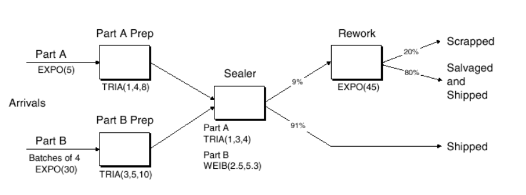
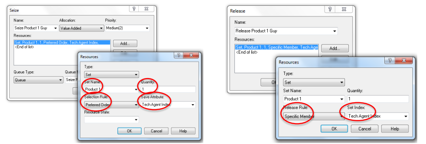

ISYE 6644 - Simulation¶
Details¶
Professor: Dr. David Goldsman
Description
This course covers modeling of discrete-event dynamic systems and introduces methods for using these models to solve engineering design and analysis problems. It'll be a mix of probability, statistics, computer science, and programming.
We'll work hard and play hard on a number of interesting topics. Everything from a Prob/Stats bootcamp to the generation of random variables on a computer to the analysis of outputs from a simulation. I tend to assign a lot of homework, but I promise that it's all reasonable. We'll have two impossibly difficult midterms and a final, but you'll survive.
By the time you're done with this course (if you are still walking), you'll be able to model, simulate, and analyze a variety of real-world processes. Think the line at Disneyworld, or a complicated manufacturing system, or even stock options!
M1-Intro¶
Introduction¶
Objectives:
- Identify simulation models and recognize studies
- Illustrate organization of simulation languages including Modeling with Arena ( a comprehensive simulation package )
Models
Are high level representations of the operation of a real world process or system.
- Can be discrete (vs Continuous)
- Stochastic (vs Deterministic)
- Dynamic (vs Static)
How to solve a model?
- Analytical methods (exact and/or symbolic)
- Numerical methods
- Simulation
Simulation is good to describe / analyze real or conceptual system behaviour. Ask "what-if" type questions. Aid in system design and optimization. It is most popular in Manufacturing industry. Used calculate the movement of parts of interation of system components; Evaluate part flow thru a system; Examine conflicting demand for resources; etc etc. Basically any system that looks at throughput (Queueing Problems). Disadvantages include: Not easy, Time consuming and costly,
Let's now take a quick look at some applications of simulation.
These include
- call centres, fast food drive thrus,
- as well manufacturing plants such as an automobile centre or other production facility,
- supply chains
- Health: Hospital room allocations, Disease propogation
- Time: monitoring time series
- Surveillance Monitoring such as drugs administered in a hospital setting
Examples¶
Let's now look at some examples
Q1: How many people need to be a room such that there is at least two with the same birthday?
- You could take some random guesses such as 9, 23, 42, or 183!
- It turns out that only 23 people are needed! On average at least
Q2: Simulating Pi (3.14159...)
- draw a unit square, and inside it draw a circle ( fully inside )
- now throw a dart at the square, and keep count,
- if inside the circle it counts as a success,
- as the number of throws grows the proportion
Q3: Integration using simulation
- Recall that an integral of a function can be approximated by a series of rectangles along the x axis.
- their height is determined by the function value at the centre
- now sum the area of all the rectangles
- as these rectangle get thinner and thinner
- you'll converge to the integral
Randomness¶
Problem:
- Need random variables (RVs) to run the simulation, (e.g. interarrival times, service times)
Solutions
Generate uniform(0,1) pseudo-random numbers (PRNs)
- using a deterministice algorithm
- Not really random but appear to be ( to a human at least )
Generate other RVs
- Start with unif(0,1)
- Apply transformations to get to any other type of random variable
Example: Linear Congruential Generator
- Choose an integer "seed"
- Set X(i) = a * X(i-1) mod m
- where a & m are carefully chosen constants and mod is the modulus function
- Set the i'th PRN as U(i) = X(i)/m
- (Hint: m should a big prime number)
Simulated Output¶
Random input to a simulator means the output will also be somewhat random.
- almost never normally distributed
- Not identically distributed
- Not independent
All this means that traditional statistical methods will fail.
Terminating Simulations
- Usually analyzed via independent replications
- Make indep runs of the simulation under identical conditions
- Sample means from each replication are assumed to be i.i.d.
Steady-State Simulations
- First deal with initialization (start-up) bias
- Usually warm-up simulation before collecting data. Failure to do so can ruin future analysis
- For sampling there is
- Batch Means
- Overlapping Batch Means / Spectral Analysis
- Standardized Time Series
- Regeneration
Batch means is the most popular.
- first do a warm up simulation,
- then you make one really long run
- then chop the remaining observations into contiguous batches
- then sample means from each batch are approximately i.i.d. normal
M2-Math&Stats Review¶
Review of basic statistics, probability, and calculus. That will be needed later on.
Calc - Derivatives¶
Suppose f(x) is a function that maps values of x from a certain domain X to a range Y, which we denote $f:X \to Y $
Then
$f(x)$ is continuous if for any $x_0$ and $x \in X$ we have $\lim_{x \to x_0} f(x)$
- where "lim" is assumed to exist for all $x \in X$
if $f(x)$ is continuous then the deriviative is given by
- $\frac{d}{dx} f(x) = f'(x) = \lim_{h \to 0} \frac{f(x+h) - f(x)}{h}$
Some handy derivatives you should recall
- $\frac{d}{dx} x^k = kx^{k-1}$
- $\frac{d}{dx} e^x = e^x$
- $\frac{d}{dx} sin(x) = cos(x)$
- $\frac{d}{dx} cos(x) = -sin(x)$
- $\frac{d}{dx} ln(x) = \frac{1}{x}$
- $\frac{d}{dx} arctan(x) = \frac{1}{(1+x^2)}$
Some handy properties/shortcuts
The second derivative $f''(x) = \frac{d}{dx}f'(x)$ and is the slope of the slope. In many examples f is thought of as the position, making f' the velocity, and f'' is the acceleration.
This has some super handy properties:
- the min/max of f(x) can only occur when the slope of f(x) is zero, i.e. only when f'(x)=0, say at $x=x_0$
- In some situations this can be thought of as a point of inflection
- this is useful when you need to find the roots of $f(x)$, or when trying to find a min/max value in an optimization
Methods for finding zero's(basic functions):
- Analytical
- given a function f(x)
- we set f'(x)=0 and solve for x
- Bisection (IVT - Intermediate Value Theorem)
- given f(x) and x1 and x2, with x1!=x2, where f(x1)>0 and f(x2)<0
- then we bisect the interval (x1,x2) at a point x3 and comute f(x3)
- we repeat this process for say (x1,x3) and continue the process
- until we reach convergence or reach a threshold
- Newton's method (for well behaved derivatives)
- given f(x) and some guess (xi)
- choose x_i+1 = x_i - g(x_i)/g'(x_i)
- repeat until convergence is achieved
Calc - Integrals¶
Fundamental Theorem of Calculus
If f(x) is continuous, then the area under the curve for $x \in [a,b]$ is denoted and given by the definite integral.
$$\int_a^b f(x) dx = F(x)\bigg\rvert_a^b = F(b)-F(a)$$
Some Handy reminders
- $\int x^k dx = \frac{x^{k+1}}{k+1}+C, k \ne -1$
- $\int \frac{1}{x} dx = ln|x| + C $
- $\int e^x dx = e^x + C$
- $\int cos(x) dx = sin(x) + C$
- $\int \frac{1}{1+x^2} dx = arctan(x) + C$
Some Handy properties include
Taylor Series Expansion of f(x) about a point a is given by
$$f(x)=\sum_{k=0}^{\infty} \frac{f^{(k)}(a)(x-a)^k}{k!}$$
Maclaurin series is just Taylor expanded around a=0
- $sin(x) = \sum_{k=0}^{\infty} \frac{(-1)^{k+1} x^{2k+1}}{(2k+1)!} $
- $cos(x) = \sum_{k=0}^{\infty} \frac{(-1)^{k} x^{2k}}{(2k)!} $
- $e^x = \sum_{k=0}^{\infty} \frac{x^k}{k!}$
Finally recall L'Hopitals rule

Calc - Numerical Integration¶
Used when a closed form of an integral doesn't exist. (ie no analytical solution can be found)
M1 - Riemann Summation
- Approximation of an integral of a function f(x) from a to b as the sum of areas of rectangles of width $\triangle x = (b-a)/n$ and height $f(x_i)$
- $\int_a^b f(x) dx \approx \sum_{i=1}^n f(x_i) \triangle x = \frac{b-a}{n} \sum_{i=1}^n f(a + \frac{i(b-a)}{n})$
- will converge to the integral as $n \to \infty$
M2 - Trapezoid
- Very similar to the Riemann rectangular method, but it uses trapezoids instead.
M3 - Monte Carlo Method
- Let $U_1,U_2,U_3,...,U_n$ be a sequence of Uniform(0,1) random Numbers
- It can be shown that
- $\int_a^b f(x) dx \approx \frac{b-a}{n} \sum_{i=1}^n f(a+(b-a)U_i)$
- and again this becomes an equality as $n \to \infty$
Probability¶
Conditional Probability is the probability of an Event A given some previous Event B has occured
- ie P(A|B)
- Computed as $P(A \cap B)/P(B)$
- Ex Let A={1,2,3} and B={3,4,5,6} then P(A|B) = 1/4
A and B are termed Independent Events if $P(A \cap B) = P(A)P(B)$
A Random Variable X is a function from the sample space $\Omega$ to the real line. ie $X:\Omega \to \mathbb{R}$
- Discrete R.V. is one where the possible values of X are finite
- Continuous R.V. is one where the probability is 0 at every individual point
Well Known R.V.s
- Uniform(a,b) ( can be discrete or continuous )
- Exponential$(\lambda)$ (continuous)
- Normal($\mu,\sigma^2$) (continuous)
Simulating R.V.s
Discrete
- if $U \sim \text{ Unif(0,1) }$ we can generate a Discrete RV by simply using the floor or ceiling function
- ie $X \sim \lceil n U \rceil$
- you can also think of this as just rounding up
Inverse transform sampling is a method for generating random numbers from any probability distribution by using its inverse cumulative distribution $F^{−1}(x)$. Recall that the cumulative distribution for a random variable $X$ is $ F_X(x)=P (X ≤ x)$. In what follows, we assume that our computer can, on demand, generate independent realizations of a random variable U uniformly distributed on [0,1].
Read More on wikipedia: https://en.wikipedia.org/wiki/Inverse_transform_sampling
Here's a Continuous example
- Suppose X is an exponential RV with $\lambda=2$,
- thus the pdf is given by $p(x)=\lambda e^{\lambda x} = 2 e^{2x}$
- with inverse of $F_X^{-1}(x) = - \frac{ln(1-x)}{2}$ ( just solve )
A small example using R
num.samples <- 1000
U <- runif(num.samples)
X <- -log(1-U)/2
# plot
hist(X, freq=F, xlab='X', main='Generating Exponential R.V.')
curve(dexp(x, rate=2) , 0, 3, lwd=2, xlab = "", ylab = "", add = T)
Expectations¶
Definition of the expected value
$ E[X] = \begin{cases} \sum_x x f(x) \\ \int_x x f(x) \end{cases} = \int_{\mathbb{R}} dF(X) \text{ we will use this as an abbreviation for the piecewise function } $
Example, Exponential($\lambda$)
$
f(x) =
\begin{cases}
\lambda e^{-\lambda x} & \text{ if x > 0 } \\
0 & \text{ otherwise }
\end{cases}
$
Integration by parts plus l'Hopital's Rule yields
$E[X] = \int_R x f(x) dx = \int_0^{\infty} x \lambda e^{-\lambda x} dx = \frac{1}{\lambda} $
LOTUS: Law Of the Unconscious Statistician
Suppose that h(X) is some function of the R.V. X,then
$
E[h(X)] =
\begin{cases}
\sum_x h(x) f(x) & \text{ X is discrete } \\
\int_x h(x) f(x) & \text{ X is continuous }
\end{cases}
= \int_{\mathbb{R}} h(x) dF(X)
$
Example
Suppose X is a discrete R.V. with the following distribution
x 2 3 4
f(x) 0.3 0.6 0.1
and let h(x) = x^3
Then
E[X^3] = 8(0.3)+27(0.6)+64(0.1) = 25Similarly for $X \sim Uniform(0,2)$ we have $E[X^n] = \frac{2^n}{(n+1)}$
Moment Generating Functions
- N'th raw moment is given by $E[X^n]$
- Expected value is the 1st moment)
- N'th central moment is given by $E[(X-E[X])^n]$
- Variance is the 2nd central moment
- $Var(X)=E[(X-E[X])^2]=E[X^2]-(E[X])^2$
Examples
- For $X \sim Bernoulli(p)$
- $E[X]=p$
- $Var[X]=p(1-p)$
- for $X \sim Exp(\lambda)$
- $E[X^n] = \int_0^{\infty} x^n \lambda e^{-\lambda x} dx = n! / \lambda^n$
- $V[X]=\frac{2}{\lambda^2} - (\frac{1}{\lambda^1})^2 = 1/\lambda^2$
Theorem (proofs left as an exercise)
- $E[aX+b]=aE[X]+b$
- $Var[aX+b]=a^2 Var(X)$
Definition Moment Generating Functions
$M_X(t)=E[e^{tX}]$ is the moment generating function (mgf) of the R.V. X
(Note that $M_X(t)$ is a function of t only!!)
Examples
- for $X \sim Bern(p)$ we have $M_X(t) = \sum_x e^{tx} f(x) = e^{t \cdot 1} p + e^{t \cdot 0} q = pe^t+q$
- for $X \sim Exp(\lambda)$ we have $M_X(t) = \int e^{tx} f(x) = \lambda \int_0^{\infty} e^{(t-\lambda)x} dx = \lambda / (\lambda - t)$ when $\lambda > t$
Functions of an R.V.¶
Problem: Suppose we have an R.V. X with pdf f(x). However, we also have that Y = h(X). Then what is the pdf of Y?
Examples ( solution to be shown later )
- if $X \sim Normal(0,1)$ then $Y=X^2 \sim \chi^2(1)$
- if $U \sim Uniform(0,1)$ then $Y=-(1/\lambda)ln(U) \sim Exp(\lambda) $
Discrete Example:
x 0 1 2
f(x) 1/4 1/2 1/4
y = x^3 - x 0 0 6This implies that g(0) = P(Y=0) = P(X=0 or 1) = 3/4 and g(6) = P(Y=6) = 1/4.
g(y) = 3/4 if y = 0
= 1/4 if y = 6Suppose X has pdf $f(x)=|x|,-1 \le x \le 1$, and $Y=X^2$
Then
$
\begin{split}
G(y) & = P(Y \le y) \\
& = P(X^2 \le y) \\
& = P(-\sqrt{y} \le X \le \sqrt{y}) \\
& = \int_{-\sqrt{y}}^{\sqrt{y}} |x| dx \\
& = y \text{ for } 0 \le y \le 1
\end{split}
$
Then the pdf of Y is $g(y)=G'(y)=1$ so $Y \sim Uniform(0,1)$
Inverse Transform Theorem
Suppose X is a continous random variable having cdf F(x). Then $F(X)\sim Uniform(0,1)$
$\begin{split}
P(Y \le y) & = P(F(X) \le y) \\
& = P(X \le F^{-1}(y)) \\
& = F(F^{-1}(y)) \\
& = y
\end{split}$
This may seem trivial now but it is an extremely important result needed when we want to generate R.V.s during a simulation
Example (Generating exponential RVs)
Suppose $X \sim Exp(\lambda)$, with cdf $F(x)=1-e^{-\lambda x}$ for x > 0
Inverse Transform Theorem implies that $F(X)=1-e^{-\lambda x} \sim Uniform(0,1)$
So let $U = Unif(0,1)$ and set $F(X)=U$.
Then we have $X=\frac{-1}{\lambda} ln(1-U) \sim Exp(\lambda)$
For instance, if $\lambda=2, U=0.27$ then X = 0.157 is an Exp(2) instance.
Example
Suppose X has the Weibull distribution with cdf : $\large F(x)= 1 - e^{-(\lambda x)^\beta}, x > 0$
Then solving for x we find that $\large X = \frac{1}{\lambda} [-ln(1-U)]^{1/\beta} $
Bonus Theorem
Here's another way to get the pdf of $Y=h(X)$ for some continuous function $h(\cdot)$
The cdf of Y is $\large F_Y(y) = P(Y \le y) = P(h(X) \le y) = P(X \le h^{-1}(y))$
By the chain rule ( and since a pdf must be $\ge 0$ ), the pdf of Y is
$\large f_Y(y) = \frac{d}{dy} F_Y(y) = f_X(h^{-1}(y)) |\frac{d}{dy} h^{-1}(y)| $
Joint PDFs¶
Consider 2 RVs interacting together.
Then the joint cdf of X and Y is
$F(x,y)=P(X \lt x, Y \lt y) \text{ for all x,y } $
Remark: The marginal cdf of X is $F_X(x) = F(x,\infty)$. We use the X subscript to remind us that it's just the cdf of X all by itself.) Similarly, the marginal cdf of Y is $F_Y(y) = F(\infty,y)$
Definition: If X and Y are discrete then the joint pmf is $f(x,y) = P(X=x,Y=y) = \sum_x \sum_y f(x,y) = 1$
Remark:
- The marginal pmf of X is $f_X(x) = P(X = x) = \sum_y f(x,y)$
- The marginal pmf of Y is $f_Y(y) = P(Y = y) = \sum_x f(x,y)$
For the continuous case change the summations to integrals and you're good to go.
Example
Consider $f(x,y) = \frac{21}{4} x^2 y, x^2 \le y \le 1$
Then the marginals pdf's are:
$\large f_X(x) = \int_{x^2}^1 \frac{21}{4} x^2 y dy = \frac{21}{8} x^2 ( 1 - x^4 ), -1 \le y \le 1 $
Independence
X and Y are independent RV's if $f(x,y) = f_X(x) f_Y(y), \forall x,y$
Example:
Let $f(x,y)=cxy$ for $0 \le x \le 2, 0 \le y \le 3$ Then X,Y are independent
Let $f(x,y)=\frac{21}{4} x^2 y \text{ for } x^2 \le y \le 1$ Then X,Y are not independent. Here the sticking point is the interval boundary for y depends on x.
Let $f(x,y) = \frac{c}{(x+y)} \text{ for } 1 \le x \le 2, 1 \le y \le 3$ Here the issue is the function itself, which cannot be factored into 2 multiplicative functions.
Theorem: X and Y are independent if you can write their joint pdf as $f(x,y)=a(x)b(x)$
Conditional Expectations¶
Conditionality
The conditional pdf of y given X=x is $f(y|x) = f(x,y)/f_X(x)$ ( assuming f_X(x) > 0)
Similarly the conditional pdf of x given Y=y is $f(x|Y=y) = f(x,y)/f_Y(y)$ ( assuming f_Y(y) > 0)
Conditional Expectation:
$
E[Y|X=x] =
\begin{cases}
\sum_y y f(y|x) & \text{ discrete } \\
\int_R y f(y|x) dy & \text{ continuous }
\end{cases}
$
Example:
Let $f(x,y)=\frac{21}{4} x^2 y \text{ for } x^2 \le y \le 1$
Then $E[Y|x] = \int_R y f(y|x) dy = \int_{x^2}^1 \frac{2y^2}{1-x^4} dy = \frac{2}{3} \frac{1-x^6}{1-x^4}$
Double Expectations
$\large E[E(Y|X)]=E[Y]$
Proof
$
\begin{split}
E[E(Y|X)]
& = \int_R E(Y|x) f_X(x) dx & \text{ by LOTUS} \\
& = \int_R \left( \int_R y f(y|x) dy \right) f_X(x) dx \\
& = \int_R y \int_R f(x,y) dx dy \\
& = y f_Y(y) dy
& = E[Y]
\end{split}
$
Computing Probabilities using Conditioning
Let A be some event, and define the RV Y = 1 if A occurs; and Y = 0 otherwise.
Then $E[Y] = \sum_y y f_Y(y) = P(Y=1) = P(A) $
Similarly, for any RV X, we have
$E[Y|X=x] = \sum_y y f_Y(y|x) = P(Y=1|X=x) = P(A|X=x)$
Thus
$
\begin{split}
P(A) & = E[Y] \\
& = E[E(Y|X)] \\
& = \int_R E[Y|X=x] dF_X(x) \\
& = \int_R E[A|X=x] dF_X(x) \\
\end{split}
$
Example: Exponential Distribution
If $X \sim Exp(\mu)$ and $Y \sim Exp(\lambda)$, are independent RVs, then
$
\begin{split}
P(Y < X) & = \int_R P(Y < x) f_X(x) dx \\
& = \int_0^{\infty} (1-e^{-\lambda x}) \mu e^{-\mu x} \\
& = \frac{\lambda}{\lambda + \mu} \\
\end{split}
$
Correlation & Covariance¶
Lotus in 2 Dimensions
$
E[h(X,Y)] =
\begin{cases}
\sum_x \sum_y h(x,y) f(x,y) \text{ if (X,Y) is discrete } \\
\int_x \int_y h(x,y) f(x,y) \text{ if (X,Y) is continuous } \\
\end{cases}
$
Theorem $ E[X + Y]=E[X] + E[Y] $
Theorem $ Var[X + Y]=V[X] + V[Y] $ True if and only if X,Y are independent
Suppose $X_1,\cdots,X_n$ form a random sample from f(x) if all the $X_i$'s are independent, and each has the same pdf/pmf.
We can write that the $X_i$'s are independent and identically distributed, $X_1,\cdots,X_n \overset{iid}\sim f(x)$
Lemma:
Let $X_1,\cdots,X_n \overset{iid}\sim f(x)$
Then the sample mean is given by $\bar{X}_n = \sum X_i/n$
and the sample variance is given by $Var(\bar{X}_n) = Var(X_i)/n$
Covariance
$Cov(X,Y) = E[(X - E[X])(Y - E[Y])] = E[XY] - E[X]E[Y]$
- Observe that $Cov(X,X) = Var(X)$ )
- REMARK : Cov(X,Y)=0 does not imply that X,Y are independent
- Ex Let $X \sim Unif(-1,1)$ and $Y = X^2$
- Then Cov(X,Y) = 0, but clearly Y depends on X
Theorem Cov(aX,bY) = abCov(X,Y)
Theorem
- Regardless of Independence
- Var(X + Y) = Var(X)+Var(Y)+2Cov(X,Y)
- Var(X - Y) = Var(X)+Var(Y)-2Cov(X,Y) ( Note that you still add the variances )
Correlation
The correlation between X and Y is defined as
$\large \rho = \frac{Cov(X,Y)}{ \sqrt{Var(X)Var(Y)} }$
Theorem $-1 \le \rho \le 1$
Example 1
f(x,y) X=2 X=3 X=4 f(y)
Y = 40 0.0 0.2 0.1 0.3
Y = 50 0.15 0.1 0.05 0.3
Y = 60 0.30 0.0 0.1 0.4
f(x) 0.45 0.3 0.25 1E[X] = 2.8 , E[Y] = 51
Var(X)=0.66, Var(Y) = 69
E[XY] = $\sum_x \sum_y xy f(x,y) = 140$
$\rho = -0.415$
Example 2
Consider two assets $S_1,S_2$, with expected returns $\mu_1,\mu_2$, variances $\sigma_1^2,\sigma_2^2, $, and $Cov(S_1,S_2)=\sigma_{12}$. We can then define a portfolio $P = wS_1+(1-w)S_2$ where $w \in [0,1]$.
Then $E[P]=w\mu_1+(1-w)\mu_2$
And $Var[P]=w^2 \sigma_1^2 + (1-w)^2 \sigma_2^2 + 2w(1-w)\sigma_{12}$
Furthermore, if we set $\frac{d}{dw} Var(P) = 0$, we obtain the critical point that (hopefully) minimizes the variance of the portfolio $w = \frac{\sigma_2^2 - \sigma_{12}}{\sigma_1^2 + \sigma_2^2 - 2 \sigma_{12}}$
Common Distributions¶
Bernoulli $X \sim Bernoulli(p)$
$
f(x) =
\begin{cases}
p \text{ if x = 1} \\
1-p \text{ if x = 0} \\
\end{cases}
$
- E[X] = p
- Var[X] = p(1-p)
- $M_X(t) = pe^t + q$
Binomial $Y \sim Binomial(n,p)$
If $X_1,\cdots,X_n \overset{iid}\sim Bern(p)$ ( ie N bernoulli trials )
then $Y = \sum_1^n X_i \sim Bin(n,p)$
$P(Y = y) = \binom{n}{y} p^y (1-p)^{n-y}$
- E[Y] = np
- Var(Y) = npq
- $M_Y(t) = (pe^t + q)^n$
Geometric $X \sim Geometric(p)$
$f(x) = q^{x-1} p, x=1,2,...$
- E[X] = 1/p
- Var(X) = q/p^2
- $M_X(t) = pe^t / (1-qe^t)$
Negative Binomial
$
\begin{equation}
NBin(r|p)=\left(\begin{array}{c}
y - 1 \\
r - 1
\end{array}\right)p^{r}(1-p)^{y-r}
\end{equation}
$
Poisson
$\large f(x) = \frac{e^{-\lambda} \lambda^x}{x!}$
- E[X] = $\lambda$
- Var[X] = $\lambda$
- $M_X(t) = e^{\lambda(e^t - 1)}$
Continuous Distributions
- Uniform $\large X \sim N(a,b)\; f(x)=\frac{1}{b-a} \; \text{ for } a \le x \le b$
- Exponential $\large X \sim Exp(\lambda) \; f(x)=\lambda e^{-\lambda x}$
- NB: Memoryless property $P(X > s+t | X > s) = P(X > t)$
- Gamma $\large X \sim Gamma(\alpha,\lambda) \; f(x) = \frac{\lambda^{\alpha} x^{\alpha-1} e^{-\lambda x}}{\Gamma(\alpha)}$
- where $\Gamma(\alpha) = \int_0^{\infty} t^{\alpha-1} e^{-t} dt$
- Note also
- if $X_1,X_2,\cdots,X_n \overset{iid}\sim Exp(\lambda)$
- then $Y = \sum_1^n X_i \sim Gamma(n,\lambda)$ ( Which is called an Erlang Distribution )
- $\large F_Y(y) = (1 - e^{- \lambda y}) \sum_0^{n-1} \frac{(\lambda y)^j}{j!} \; y \ge 0$
The most famous of all - The Normal
$\large X \sim N(\mu,\sigma^2) \; f(x)=\frac{1}{\sqrt{2 \pi \sigma^2}} exp\left[\frac{-(x-\mu)^2}{2\sigma^2}\right] $
- $E[X] = \mu $
- $Var(X) = \sigma^2 $
- $M_X(t) = exp(\mu t + (1/2) \sigma^2 t^2)$
Extremely Useful Properties
Theorem If $X_1,X_2$ are independent with $X_i \sim N(\mu_i,\sigma_i^2)$ then $ X_1 + X_2 \sim N(\mu_1 + \mu_2, \sigma_1 + \sigma_2)$
Corollary (of a previous theorem)
- If $X_1,\cdots,X_n \overset{iid}\sim N(\mu,\sigma^2)$
- Then the sample mean is $\bar{X}_n \sim N(\mu,\sigma^2 / n)$
- This is telling us that as n grows large the variance becomes less and less variable
Central Limit Theorem
If $(X_1,X_2,\cdots,X_n) \overset{iid}\sim f(x)$ with mean $\mu$ and variance $\sigma^2$
Then $\large Z_n = \frac{\sum X_i - n \mu}{\sqrt{n}\sigma} = \frac{\sqrt{n}(\bar{X}_n - \mu)}{\sigma} \overset{d}\rightarrow N(0,1)$
In plain language: The cdf of any iid RVs will approach the normal as n increases
Estimation¶
Define: A statistic is a function of the observations $X_1,\cdots,X_n$ and not dependent on any unknown parameters
Examples: $\bar{X} = (1/n)\sum_i X_i$ or $S^2 = \frac{1}{n-1} \sum_i (X_i - \bar{X})^2$
Define: $T(\boldsymbol{X})$ is unbiased for $\theta$ if $E[T(\boldsymbol{X})] = \theta$
Example:
- Suppose $X_1,\cdots,X_n$ are iid anything with mean $\mu$
- Then $\large E[\bar{X}] = E\left[ \frac{1}{n} \sum X_i \right] = \frac{1}{n} \sum E[X_i] = E[X_i] = \mu$
- So $\bar{X}$ is always unbiased for $\mu$. That's why $\bar{X}$ is the sample mean (Note that $\bar{X}$ being unbiased does not imply 1/$\bar{X}$ is unbiased)
Example:
- Suppose $X_1,\cdots,X_n$ are iid anything with mean $\mu$ and variance $\sigma^2$
- Then $\large E[S^2] = E\left[ \frac{\sum (X_i - \bar{X})^2}{n-1} \right] = Var(X_i) = \sigma^2$
- Thus $S^2$ is always unbiased for $\sigma^2$, this is why $S^2$ is called the sample variance.
Example:
Suppose that $X_1,\cdots,X_n \overset{iid}\sim Unif(0,\theta)$
Consider two estimators: $Y_1 = 2\bar{X}$ and $Y_2 = 2\frac{n+1}{n} max(X_i,1\le i \le n)$
Since $E[Y_1] = 2 E[\bar{X}] = 2 E[X_i] = \theta$ we can see that $Y_1$ is unbiased for $\theta$ $Y_2$ also unbiased but this is more difficult to determine
Thus
$
\begin{split}
P(M \le y) & = P(X_1 \le y,\cdots, X_n \le y) \\
& = \prod_i P(X_i \le y) \\
& = [P(X_1 \le y)]^2 \\
& = [\int_0^y f_{X_1}]^n \\
& = [\int_0^y 1/\theta]^n \\
& = (y/\theta)^n
\end{split}
$
Which implies that the pdf of M is $\large f_M(y) = \frac{d}{dy} (y/\theta)^n = \frac{ny^{n-1}}{\theta^n}$
Now we can compute
$E[M] = \int_0^{\theta} y f_M(y) dy = \int_0^{\theta} \frac{ny^n}{\theta^n} = \frac{n\theta}{n+1}$
This tells us that $Y_2$ is also biased, so which is better? It turns out that $Y_2$ is best because it has a lower variance.
M3-Basic Simulation¶
This module will go through a bunch of simulation examples that you can do by hand.
Topics
- Solving a differential equation
- Monte Carlo integration
- Making some pi
- Single-server queue
- (s,S) inventory system
- Simulating random variables
- Spreadsheet simulation
Recall: If $f(x)$ in continuous, then it has the derivative
$\frac{d}{dx}f(x) = f'(x) = \underset{x\to\infty}\lim \frac{f(x+h) - f(x)}{h} $
If the limit exists and is well-defined for any given x. Think of the derivative as the slope of the function
So for a small h
$f'(x) \approx \frac{f(x+h) - f(x)}{h}$ and $f(x+h) \approx f(x) + h f'(x)$
Example
Suppose you have a differential equation of a population growth model, $f'(x) = 2f(x)$ and suppose we know that $f(0)=10$. Then we can approximate the equation using the above equations
Observe that:
$f(x+h) \approx f(x) + h f'(x) = f(x) + h(2f(x)) = f(x)(1+2h)$
Similarly
$f(x+2h)=f((x+h)+h) \approx (1+2h)f(x+h)\approx(1+2h)^2 f(x)$
Thus $f(x+ih)\approx(1+2h)^i f(x)$ for i=0,1,2,...
So for f(0) and h=0.01 we have $f(0.01i) \approx 10(1.02)^i$
0 0.01 0.02 0.03 0.04 ... 0.10
10 10.20 10.40 10.61 10.82 ... 12.19 simulation using above
10 10.20 10.41 10.62 10.83 ... 12.21 this is real value, turns out f(x)=e^2x - we hid this fact to illustrateIntegration¶
The function F(x) having derivative f(x) is called the antiderivative. The antiderivative is denoted $F(x) = \int f(x) dx$ and this is also called the indefinite integral of f(x).
Fundamental Theorem of Calculus
If $f(x)$ is continuous, then the area under the curve for $x \in [a,b]$ is denoted and given by the definite integral
$\large \int_a^b f(x) dx = F(x) |_a^b = F(b) - F(a)$
Monte Carlo Integration¶
Let the integral $\large I = \int_a^b g(x) dx = (b-a) \int_0^1 g(a+(b-a)u)du$ where u = (x-a)/(b-a)
Suppose $U_1,U_2,\cdots \overset{iid}\sim Uniform(0,1)$ and we define $I_i = (b-a)g(a+(b-a)U_i)$ for i = 1,2,...,n
We can use the sample average as an estimator for I:
$\large \bar{I}_n = \frac{1}{n} \sum I_i = \frac{b-a}{n} \sum_1^n g(a+(b-a)U_i)$
Turns out that, due to the law of large numbers, if an estimator is asymptotically unbiased and it's variance goes to zero, then things are good.
Consider, by LOTUS:
$
\begin{split}
E[\bar{I}_n] & = (b-a)E[g(a+(b-a)U_i)] \\
& = (b-a) \int_R g(a+(b-a)u) f(u) du \\
& = \text{ where f(u) is the Uniform(0,1) pdf} \\
& = (b-a) \int_0^1 g(a+(b-a)u) du \\
& = I
\end{split}
$
So $\bar{I}_n$ is unbiased for I
Since it can also be shown that Var($\bar{I}_n) = O(1/n)$ the LLN implies that $\bar{I}_n \to I \text{ as } n \to \infty$
Furthermore, by CLT we also have that $\bar{I}_n \approx N(E[\bar{I}_n], Var[\bar{I}_n]) \sim N(I,Var[I_n]/n)$
Which suggests a $100(1-\alpha)\%$ confidence interval
$I \in \bar{I}_n \pm z_{\alpha/2} \sqrt{S_I^2/n}$
Where $z_{\alpha/2}$ is the usual standard normal quantile
$S_I^2 = \frac{1}{n-1} \sum_i^n (I_i - \bar{I}_n)^2$
Example:
Suppose $I = \int_0^1 sin(\pi x) dx$ ( furthermore suppose you don't know the actual answer :))
Take 4 Uniform(0,1) observations say, 0.79 0.11 0.68 0.31
Since $I_i = (b-a)g(a+(b-a)U_i) = g(U_i) = sin(\pi U_i)$
We obtain $\bar{I}_n = \frac{1}{4} \sum I_i = \frac{1}{4} \sum sin(\pi U_i) = 0.656$
( The real answer is $2/\pi$ which is 0.6366, so it's pretty good )
Furthermore a 95% confidence interval for I is $I \in 0.656 \pm 1.96 \sqrt{0.0557/4}$ and it gets better as n increases!!
MCI - Example 1¶
Let's try computing pi using Monte Carlo Integration as described above
Problem Consider a unit square (with area one). Inscibed in the square is a circle with radius 1/2, thus the area of the circle is $\pi/4$. We will throw darts at the square. We expect that the probability of the dart landing in the circle is $\pi/4$. We will use this to compute $\pi$, or at least estimate it.
How Toss n darts at the square and calculate the proportion $\hat{p}_n$ that land in the circle. Then an estimate for $\pi$ is $\hat{\pi}_n = 4 \hat{p}_n$ which converges to $\pi$ as n becomes large by the Law of large numbers LLN
To simulate a dart toss let $U_1,U_2 \overset{iid}\sim Unif(0,1)$. Then $(U_1,U_2)$ represents the random position of the dart on the unit square.
A success is when $(U_1 - 1/2)^2 + (U_2 - 1/2)^2 \le 1/4$
Implementation
- Choose your favourite spreadsheet
- Column 1 : pick a random number between 0,1 (=RAND()) call this col $U_1$
- Column 2 : pick a random number between 0,1 (=RAND()) call this col $U_2$
- Column 3 : now take the sum of each column less 1/2 and squared
- Column 4 : if Col 3 > 1/4 then 0 else 1
- Drag rows to your hearts content ( number of tosses )
Finally just sum(col4)/count(col4). As the number of tosses, represented by rows, gets larger your estimation will get better. Remember to multiply by 4!! to get $\pi$ since the area of the circle is $\pi/4$
MCI - Example 2¶
Problem Customers arrive at a single server queue with iid interarrival times and iid servie times. Customers must wait in a FIFO, first in first out line, if the server is busy. We want to estimate the expected customer wait time, and the expected number of people in the system (queue), as well as the server utilization.
Parameters
- Interarrival time between customer $i-1$, and $i$ is $I_i$, this is the amount of time between two arrivals
- Customer i's arrival time is $A_i = \sum_1^i I_j$, this is the time the i'th customer arrives/enters the system
- Customer i's service start time is $T_i = max(A_i,D_{i-1})$, where $D_{i-1}$ would be the departure time of the previous customer
- Customer i's waiting time $W_i^Q = T_i - A_i$, no surprise here it's just the length of time it takes for service to start
- Customer i's time in the system $W_i^Q = D_i - A_i$, no surprise it's just their departure time less arrival time
- Customer i's service time is $S_i$
- Customer i's departure time is $D_i = T_i + S_i$
Small example
i | I_i A_i | T_i W^Q S_i | D_i
1 | 3 3 | 3 0 7 | 10
2 | 1 4 | 10 6 6 | 16
3 | 2 6 | 16 10 4 | 20
4 | 4 10 | 20 10 6 | 26
5 | 5 15 | 26 11 1 | 27
6 | 5 20 | 27 7 2 | 29
NB sum(W^Q)/6 = 7.33 = Avg wait time for this simulation with six customerThe expected number of people at any time in the system is a bit trickier.
We can integrate over L(t)
Or more easily is taking the average over $D_i - A_i$
$
\begin{split}
\bar{L} & = \frac{\text{total person-time in system}}{29} \\
& = \frac{\sum_1^6 (D_i - A_i)}{29} \\
& = \frac{7+12+14+16+12+9}{29} \\
& = \frac{70}{29} \approx 2.41 \\
\end{split}
$
Finally to get estimated server utilization time we take time busy / total time ie $\hat{\rho} = 26/29$. Note that for the first three units of time the server is free.
What about a LIFO system? Last in first out??
We can re-use our example above
Some columns remain the same $i \; I_i \; A_i \; S_i $
but this time some columns change such as $T_i \; W_i^Q $
i | I_i A_i | T_i W^Q S_i | D_i
1 | 3 3 | 3 0 7 | 10
2 | 1 4 | 23 19 6 | 29
3 | 2 6 | 17 11 4 | 21
4 | 4 10 | 10 0 6 | 16
5 | 5 15 | 16 1 1 | 17
6 | 5 20 | 21 1 2 | 23
Now sum(W^Q)/6 = 5.33 is the avg wait time
And 58/29 = 2 is the avg number of people in the systemComparing each example suggests that a LIFO is a better approach.
MCI - Example 3¶
Let's now consider a more complex (s,S) inventory system
Constraints
- A Store sells a product at $d per unit
- Store policy says we should have "at least" s units at the start of each day
- if inventory at end of day is less than s then we must order enough to get back to S by the beginning of the next day
- there are various costs in the system
Parameters
Let $I_i$ denote the inventory at the end of day i, and let $Z_i$ denote the order that we place at the end of the day i.
Clearly
$Z_i =
\begin{cases}
S - I_i & \text{ if } I_i < s \\
0 & \text{ otherwise }
\end{cases}
$
Extra Details
- If an order is placed to the supplier at the end of day i, it costs the store $K+cZ_i$.
- It costs \$h per unit for the store to hold unsold inventory overnight
- There is also a penalty cost of \$p per unit if demand can't be met
- No backlogs are allowed
- Demand on day i is $D_i$
How much money does the store make on day i????
Let d=10; s=3; S=10; K=2; c=4; h=1; p=2
Consider
- Demand sequence $D_1=5 \; D_2=2 \; D_3=8 \; D_4=6 \; D_5=2 \; D_6=1 \;$
- Initial stock of $I_0 + Z_0 = 10$
MCI - Example 4¶
Discrete Uniform:
- Consider a D.U. on ${1,2,\cdots,n}$ ie $X=i$ with probability 1/n for i=1,2,...,n.
- for this could just be an n-sideed dice toss
- If $U \sim Unif(0,1)$, we can obtain a D.U. Random Variate simply by setting $X=\lceil nU \rceil$
- where $\lceil \cdot \rceil$ is the ceiling or round up function
Another Discrete Uniform
$
P(X=x)
\begin{cases}
0.25 & \text{ if } x=-2 \\
0.10 & \text{ if } x=3 \\
0.65 & \text{ if } x=4.2 \\
0 & \text{ otherwise } \\
\end{cases}
$
We can't use a die toss to simulate this random variable. Instead, we use the inverse transform method.
x f(x) P(X<=x) Unif(0,1)
-2 0.25 0.25 [0.00,0.25]
3 0.10 0.35 (0.25,0.35]
4.2 0.65 1.00 (0.35,1.00)- Sample $U \sim Unif(0,1)$.
- Choose the corresponding x-value (ie $X=F^{-1}(U)$).
- EX U=0.46 means that X=4.2
Now we'll use the inverse transform method to generate a continuous RV. We'll talk about the following result a little later
Theorem If X is a continuous RV with CDF F(x), then the R.V. $F(X) \sim Unif(0,1)$.
This suggests a way to generate realizations of the R.V. X. Simply set $F(X)=U \sim Unif(0,1)$ and solve for $X=F^{-1}(U)$
Example:
Suppose $X \sim Exp(\lambda)$. Then $F(x)=1-e^{-\lambda x} \; for \; x \gt 0$
So Set $F(X)=1-e^{-\lambda X} = U$
Now solve for X, $X = \frac{-1}{\lambda} ln(1-U) \sim Exp(\lambda)$
Ex: Generating Uniforms The above RV generation Examples required us to generate pratically independent and identically distributed (iid) Unif(0,1) RV's. In excel for example the '=RAND()' function generates Uniform(0,1).
Here's an algorithm to generate pseudo-random numbers (PRNs) of deterministic numbers that appear to be iid U(0,1).
- Pick a seed integer $X_0$
- Let $X_i = 16807 X_{i-1} mod(2^31 - 1) \; for \; i=1,2,\cdots$
- then set $R_i = X_i / mod(2^31 - 1) \; i=1,2,\cdots$
M4-Simulation Basics¶
Goal: To Understand the nutbolts of simulation.
Objective:
- Steps in a simulation study
- Useful Definitions
- Simulation clock advance mechanisms
- Two modeling approaches for simulations
- Simulation Languages
Simulation Steps¶
Problem Formulation statement of problem.
- Profits are too low. What to do?
- Customers are complaining about the long lines. Help!
Objectives and Planning what specific questions to answer?
- How many workers to hire?
- How much buffer space to insert in the assembly line?
Model Building both an art and science.
- M/M/k queueing model?
- Need physics equations?
Data Collection what kinds of data, how much?
- Continuous? Discrete?
- What exactly should be collected?
- Budget considerations.
Coding decide on language, write program
- Modeling paradigm
- Event-Scheduling
- Process-Interaction
- 100s of languages out there
Verification Is code OK? If not, go back to 5 (Coding).
Validation Is model OK? If not, go back to 3 (Modeling) and 4 (Data Collection)
Experimental Design what experiments need to be run to efficiently answer our questions?
- Statistical considerations
- Time / budget
Run Experiments
- press the “go” button and make your production runs, often substantial.
- May require a lot of time.
Output Analysis statistical analysis, estimate relevant measures of performance
- Often iterative with 8 (Experimental Design) and 9 (Production Runs)
- Almost always need more runs
Make Reports Implement, and Make Management Happy
Definitions and terminology¶
System is a collection of entities (people, machines, etc.) that interact together to accomplish a goal.
Model is an abstract representation of a system, usually containing math, and/or logical relationships describing the system in terms of states, entities, sets, events, etc. (terms that we’ll define below).
System state A set of variables that contains enough information to describe the system. Think of the state as a “snapshot” of the system.
E.g., in a single-server queue, all you might need to describe the state are:
- $L_Q(t)$ = # of people in queue at time t
- $B(t)$ = 1/0 if server is busy/idle at time t.
Entities can be permanent (like a machine) or temporary (e.g., customers), and can have various properties or attributes (e.g., priority of a customer or average speed of a server).
list (or queue) is an ordered list of associated entities (for instance, a linked list, or a line of people).
Event is a point in time at which the system state changes (and which can’t be predicted with certainty beforehand).
Examples:
- an arrival event
- a departure event
- a machine breakdown event
“Event” technically means the time that a thing happens, but loosely refers to “what” happens (an arrival).
An activity is a duration of time of specified length (aka an unconditional wait).
Examples include:
- exponential customer interarrival times
- constant service times
- We can explicitly generate those events, so they are “specified”.
A conditional wait is a duration of time of unspecified length.
E.g., a customer waiting time
- we don’t know that directly.
- In fact, we just know arrival and service times and will use those to reverseengineer the waiting times.
Time Advance Mechanisms¶
We’ll discuss the simulation clock and how this is used to move the simulation along as time progresses.
Definitions
The simulation clock is a variable whose value represents simulated time (which doesn’t equal real time).
Time-Advance Mechanisms — how does the clock move? Always moves forward (never goes back in time).
Two ways:
- Fixed-Increment Time Advance
- Next-Event Time Advance
Fixed-Increment Time Advance
In this situation we will update the state of the system at fixed times, nh, for n = 0,1,2,…, where h is chosen appropriately. This is used in continuous-time models (e.g., differential equations) and models where data are only available at fixed times (e.g., at the end of every month).
We will not use this in this course!!
Next-Event Time Advance
In this scenario the clock is initialized at 0. All known future event times are determined and placed in the future events List (FEL), ordered by time. The clock advances to the most imminent event, then to the next most imminent event, etc. At each event, the system state and FEL are updated.
The system state can only change at event times. Nothing really happens between events. The simulation progresses by sequentially executing (dealing with) the most imminent event on the FEL.
What do we mean by “dealing with”? The system state is updated, depending on what type of event it is (arrival, departure, etc.). For example, if it’s an arrival event, you may have to turn on an idle server, or add a new customer to the queue of a busy server. Now Update the FEL!
What do we mean by “updating the FEL”? Any time there’s an event, the simulation may update the chronological order of the FEL’s events by
- inserting new events,
- deleting events,
- moving them around, or
- doing nothing
Example:
After guy arrives at a queue, typical simulation programs will immediately spawn the next arrival time. If this arrival time is significantly far enough in the future, we’ll simply put it at the “end” of the FEL (in terms of ordered execution times of the events).
If that next arrival turns out to happen before another event, e.g., a slow server finishing his current customer, then that next arrival must be inserted in the interior of the FEL (in terms of ordered execution times).
What if the arrival is a nasty looking guy, and a number of customers currently in line get disgusted and leave or switch to other lines? Then you have to delete or move entries in the FEL
To do this we will need efficient list processing (e.g., linked lists) for the FEL.
- Singly and doubly linked lists intelligently store the events in an array that allows the chronological order of the events to be accessed.
- Such lists easily accommodate insertion, deletion, switching of events, etc.
- Take a Computer Science course to learn more.
Be careful about events that take place at the same time, e.g., a guy shows up at the same time that another guy finishes getting served. Simply establish ground rules for how to deal with ties. Every discrete-event simulation language maintains a FEL somewhere deep in its cold, cold heart.
Most commercial simulation packages take care of the FEL stuff for you, so you don’t have to mess around at all with FEL logic.
EXAMPLE:
Next-Event Time Advance Example (adapted from BCNN): Consider the usual single-server FIFO queue that will process exactly 10 customers.
The arrival times and service times are:
Customer 1 2 3 4 5 6 7 8 9 10
Arrival Time 1 3 4 10 17 18 19 20 27 29
Service Time 5 4 1 3 2 1 4 7 3 1Let's create a table with entries for event time, system state, queue, FEL, and cumulative statistics (total server busy time and cust system time).
A denotes an arrival and D a departure (e.g., 2A is customer 2’s arrival). Services have priorities over arrivals in terms of updating the FEL: break ties by handling a service completion first — get those guys out of the system!
Clock System State Queue FEL Cumululative Stats (times)
t Lq(t) B(t) Cust,arrTime event time,type Busy TimeInSystem
0 0 0 0 (1,1A) 0 0
1 0 1 0 ( 3,2A),(6 ,1D) 0 0
3 1 1 (2,3) ( 4,3A),(6 ,1D) 2 2
4 2 1 (2,3),(3,4) ( 6,1A),(10,4D) 3 4
6 1 1 (3,4) (10,2D),(10,4D) 5 10
10 0 1 0 (10,4A),(11,3D) 9 18
............Recall Lq(t) = number of people in the system B(t) = Server busy
General Modelling¶
Two Modeling Approaches
Last Time: Discussed the FEL and how time flies in a discrete-event simulation.
This Time: We’ll look at two highlevel simulation modeling approaches.
The “process-interaction” approach will be used to model complicated simulation processes. There is also an alternative approach called “Event Scheduling”.
Event Scheduling This is really complex. Google it
Most commercial applications use Process Interaction (PI)
How would we handle such a generic model in a PI language (like Arena)?
All you do is:
- Create customers every once in a while.
- Process (serve) them, maybe after waiting in line.
- Dispose of the customers after they’re done being processed.
Simulation Languages¶
More than 100 commercial languages in the ether.
- Examples (sort of from low- to highlevel): FORTRAN, SIMSCRIPT, GPSS/H, Extend, Arena, Simio, Automod, AnyLogic
- 5–10 major players at schools
- Huge price range from <\$1,000 – \\$100,000?
But there’s also some Freeware available!
- Several nice packages in Java, Python (e.g., SimPyl).
- Little bit higher learning curve, but not too bad.
When selecting a language, you should take into account:
- Cost considerations: \$$, learning curve, programming costs, runtime costs, etc.
- Ease of learning: documentation, syntax, flexibility
- World view: E-S, P-I, continuous models, combination
- Features: RV generators, stats collection, debugging aids, graphics, user community
Where to learn simulation languages?
- Here (nice to have you here!)
- Textbooks (especially in conjunction with this class)
- Conferences such as the Winter Simulation Conference
- Vendor short courses (at a potentially steep cost)
Arena¶
We move to the design and analysis of dynamic systems that evolve over time.
- We’ll use Arena, from Rockwell Software – one of several popular “discrete-event” simulation packages.
- Free Arena download available at : https://www.arenasimulation.com/academic/students
M5Pt1-ARENA intro¶
Some Handy Tutorials
- https://shamsulsarip.files.wordpress.com/2015/07/arena-tutorial.pdf
- https://uh.edu/~lcr3600/simulation/models.html
Topics:
- Introductory
- Modeling multi-channel systems (network like)
- Call-centre model
- Misc Model demos
Introduction¶
Process-Interaction
Recall that PI approach was mentioned in a previous module. Basically it's just a flowchart!.
Consider a generic customer entity and the sequence of events and activities processes it undergoes as it moves through the system. At the same time the system may have entities competing with each other as the compete for resources, aka processes. Arena takes this process-interaction world view. The entities flow through a network of modules (blocks) that describe their behaviour. The network can be represented as a process flowchart.
Example People show up at a barber shop, get served, perhaps after waiting in line, and then leave.
In Arena:
- Create (to generate customer arrivals)
- Process (use the barber)
- Dispose (customer leaves the barber )
Getting Arena
Just go to Rockwell's website or google arenasimulation. Get the student version. It's not fully functional but it will suffice to provide the needed ability to learn most of the basic.
Quick Overview:
- File: Lets you do the usual New, Open, Close, Save,…,
- but also allows you to import different template panels and background pix.
- Edit: Allows you to edit entity pix, insert objects, other nice stuff.
- View: See various toolbars, customize your “named views”, etc.
- Tools: Lots of cool toys, including Input Analyzer, OptQuest, AVI capture, macros,…
- Arrange, Object, Window: Various visualization aids.
- Run: Set a run up and make it go as fast as you want or step-bystep
Basic Process Template: Is a panel on the left hand side of Arena (old version). In Newer versions of Arena they've categorized the modules/blocks into similarity like panels. For example under Discrete processing you'll find the Create-Process-Dispose modules.
For our purposes we will focus on the modules in the Basic Process Template
- Modules: Create, Dispose, Process, Decide, etc etc
- Data: Attribute, Entity, Queue, Resource, Schedule, Set, Picture
For more advanced templates go to File > Attach and pick a different template
Let's delve into the Create-Process-Dispose process-interaction
- Create: Periodically generates customer arrivals
- Process: Have work performed on the customers; (maybe wait in line, or possibly self service)
- Dispose: Customers leave the system after service
If you double click on a module, in the model editor, you will see it's properties.
Create has fields for
- The name of the module
- The type of entity (customer)
- Interarrival distribution
- # of customers per arrival
- Maximum # of arrivals allowed
- Time that the first guy shows up
Process module has fields for
- The name of the module
- Type of action. This is where you can try to reserve a server or free a server who’s currently in use.
- More on this in next lesson.
- How long will you be delayed?
- I.e., what is the service time?
Dispose module
- Nothing deep here – you just get rid of entities.
- You can name the module.
Seize-Delay-Release
You'll take one of the following “actions” in the Process module:
- Delay:
- Spend time in the Process (self-service).
- Seize-Delay-Release:
- Grab at least one resource (server),
- spend time getting served,
- then free the server for the next customer.
- If you Seize and the server isn’t available, you may have to wait in a queue.
- Seize-Delay:
- Grab at least one resource
- Spend time getting served.
- Remember to Release the server sometime later, else he gets deadlocked and a giant line will form!
- Delay-Release:
- Use a previously Seize’d server for a while,
- then free him for the next guy to use.
Example:
- A customer walks into the Process module,
- does a Seize-Delay-Release to grab
- and use one unit of the resource Barber.
- Hit the Add button,
- name the resource Barber,
- and set Quantity = 1.
- The Process is given a default name of “Process 1”
- and includes the resource
- as well as the default queue "Process 1: Queue" (talk about later).
- Process = Resource + Queue
Decide Module
The Decide module allows customers to make probabilistic and conditional choices about their paths.
When an entity gets to a Decide module, they can…
- Randomly go to either of two locations (“2-way by Chance”) (probabilities are given in percentages)
- Randomly go to any of various locations (“N-way by Chance”)
- Go to either of two locations if a condition is satisfied (“2-way by Condition”)
- Go to any of various locations if a condition is satisfied (“N-way by Condition”)
Assign Module
The Assign module allows us to give values to attributes and variables, and even assign graphics to entities.
Attributes
Each customer passing through the system has various properties
- Tom is 6’ tall, weighs 160 lbs, loves baseball, and has LDL cholesterol = 108.
- Justin B. is 4’11” tall, weighs 280 lbs, loves eating lard, and has LDL = 543.
- Both guys have 4 attributes, though other guys may have different numbers of attributes.
- Attributes need to be numerical; for example, BB = 11 and lard = 28.
Variables
Unlike attributes, whose values are specific to each customer variables are global.
- If you change a variable anyplace in the Arena program, it gets changed everywhere.
- Example:
- a WIP (Work In Process) variable might be incremented when an entity is Create’d,
- and decremented if it’s Dispose’d – these events could occur anywhere.
Spreadsheets
- The Attribute Spreadsheet keeps track of existing attributes that you might define in an Assign.
- Can make your own (double click).
- Can be vectorized.
- Variable Spreadsheet pretty much the same.
- Entity Spreadsheet allows you to set initial picture.
Arena Internal Variables
Talk about Arena’s so called “internal” variables that are automatically calculated as the simulation proceeds.
Dirty Little Secret: Arena keeps track of and continuously updates lots of stuff as the simulation runs.
Good for making decisions, drawing graphs, etc.
Examples:
- TNOW = current simulated time
- NR(Barber) = # of resource Barber’s servers now working
- NQ(Process 1.Queue) = # customers in that queue
- Create 1.NumberOut = # of customers who have so far left the module named Create 1
Huge list is available if you sniff around Build Expression.
- Demo Time! Go to the shortest line.
Arena Graphics and Illustrations
How can we display the values of certain variables in real time, construct graphs, and produce output result files?
When the simulation is over, it will automatically generate an output report giving info on server usage, queue length, customer waits and cycle times, and other user-defined quantities.
- Demo time, including drill press example!
M5Pt2-ARENA continued¶
Batch, Separate, and Record Modules¶
Batch Module
- Combine (“batch”) multiple customers into one “super”-customer.
- Batch Size = 3 accumulates 3 guys before sending off the super-customer.
- If info about the individual customers in a batch won’t be needed later on,
- then choose Type = Permanent.
- But if you want eventually to reconstitute the original members, set Type = Temporary.
- Temporary batches will need to be split before being Dispose’d (keep watching).
Seperate Module
- Used to
- Duplicate a single entity,
- or split multiple entities that had been combined in a Batch module
- If batch type=Permanent then use "Duplicate original" to get clones
- if batch type=Temporary then use "Split existing branch" to regain their original attributes
- If dealing with a Permanent batch, usually use Duplicate Original to get several customers all with the same attributes.
- If dealing with a Temporary batch, use Split Existing Batch to reproduce customers with original attributes.
Record Module
- Nothing special, Collect statistics when an entity passes through the module.
- We’ll talk more about this module as we encounter it in future examples.
- Demo Time! Now we’ll look at a couple of permutations of the Batch and Separate modules.
DEMO: "Module05-13_-_BatchSeparate.doe"
- Notice how a man and a woman become batched into a single woman
- In the top model they are seperated into clones ... because the batch type is permanent
- In the bottom model they are seperated back into their original types
Run Setup and Control¶
We’ll be looking at a bunch of easy little trivia points to help you get your simulation runs going efficiently.
Run Setup
Run > Setup gives you lots of stuff.
Replication Parameters tab
- Number of Reps: # of indep runs.
- Initialize Between Reps: Do you start the stats collection and/or system state from scratch for each replication?
- Warm-up Period: How long to run before you start keeping data.
- Rep Length: How long each run is.
- Terminating Condition:
- Any special ways to stop the simulation
- (besides rep length condition from this tab or max arrivals from Create module)?
Run Speed tab: Often need to speed up or slow down the simulation by more than what you can do on the main screen.
Reports: Arena has a variety of reports that it gives upon completion of a run.
- Contains info on customer waits, lengths of queues, server utilizations, userdefined variables, etc.
- Category Overview summarizes all reps.
- Category by Replication gives tedious info about each rep.
- SIMAN Report gives concise text file
Run > Setup > Run Control
- gives a variety of ways that you can run the simulation.
- Ex:
- Batch mode, which turns off all graphics and result in extremely fast runs.
Two-Channel Manufacturing Example¶
Demo a twochannel manufacturing system, where we finally put a lot of the previous material together.
This is Model 4-1 “An Electronic Assembly and Test System” from the KSZ (2015) text, Simulation with Arena.
- Two different arrival streams
- Type A parts show up 1-at-a-time; Type B’s 4-at-a-time.
- Type A’s show up a little more often than Type B’s.
- A’s feed into a Prep A server; B’s go to Prep B. Different service times.
- Then the parts get processed by the same Sealer server, but again with different service time distributions.
- All parts undergo an inspection. If they pass, they exit.
- If they don’t pass, they go to a Rework server, and then another inspection. Whether or not they pass, they exit the system.

How to handle different A and B service times at Sealer?
- Trick 1: Pre-assign the service times as an attribute (Sealer Time) in an Assign module immediately after each customer arrives. Use that attribute regardless of being a Type A or B part.
- Trick 2: While we’re at it, use the Assign to store each customer’s arrival time as an attribute. Use the Arena variable TNOW to do so.
- Record departure times just before parts get Dispose’d, This will allow us to get average cycle times ( depart – arrival Times ) for any of the 3 types of parts (pass on first try, pass on second, fail both).
Dave’s Alternative Trick: Is there another way to model the process time at the Sealer without having to assign a Sealer Time attribute for A’s and B’s?
- Yes! It involves a little work, but it’s nice to know.
- Note that the entity types (Part A and Part B) are assigned in the respective Create modules.
- Instead of assigning the Sealer Time as an attribute in the Assign module, we can just wait until the Sealer Process module and use the following logical expression,
- where (x==y) = 1 if x=y, and 0 otherwise. (See why?)
- ((Entity.Type == Part A) TRIA(1,3,4)) + ((Entity.Type == Part B) WEIB(2.5,5.3))
Demo: "Module05-15_-_Model_04-01-ElectronicAssembly-slow.doe"
M5Pt3-ARENA Advanced¶
Fake Customers¶
This Lesson: We’ll talk about “fake” customers!
Idea: These aren’t real customers at all… their purpose is just to do some task that Arena needs.
You can use “fake” customers to accomplish various tasks during a simulation.
- Like triggering a breakdown, keeping track of statistics or metrics
- Not actual customers that you care about in terms of waiting times or use of resources.
- Demo Time will explain all!
- Calculate normal probabilities
- Keep track of which time period you’re in (part of Call Center example coming up)
- Breakdown demon
The Advanced Process Template¶
This Lesson: We’ll add to our arsenal of modules by introducing the Advanced Process template!
Idea: Lots of great new stuff, though I don’t expect you to memorize everything.
File > Template Panel > Attach (and hopefully you find it in the Rockwell Software \ Arena \ Template directory).
For Newer Arena try > Attach > "...\Program Files\Rockwell Software\Arena\Template\OldArenaTemplates"
Lots of new modules and spreadsheets.
- I don’t expect you to memorize them all.
- Concentrate for now on a few of these (comment on others later):
- Seize, Delay, Release modules
- Expression, Failure spreadsheets.
Seize, Delay, Release¶
- Why do we have separate Seize, Delay, and Release modules?
- Aren’t they right there in the Process module?
- Yup, but sometimes you need to do things that are too complicated for the Process module version of Seize–Delay–Release.
- Now you can handle things like…
- Seize–Assign–Delay–Release
- Non-symmetric multiple Seize’s and Release’s
- Complicated Seize’s and Release’s that might depend on sets of servers (as in the upcoming Call Center example)
- Demo Time!
- Will talk about some of these Seize, Delay, Release issues.
- Will also sneak in some wisdom about the Expression spreadsheet.
Resource Failures and Maintenance¶
This Lesson: We’ll study model breakdowns and maintenance in a way that’s more direct than via fake customers.
Failures
- You can cause resource failures by scheduling “breakdown demons” (fake customers with high priority).
- this isn’t elegant.
- Better way is to use the Resource and Failure spreadsheets in conjunction with each other.
How To
Go to Resource spreadsheet in the Basic Process template.
- Click on Failures column.
- Add a Failure Name.
- Choose Failure Rule (will discuss in a minute).
- Go to the Failure spreadsheet in the Advanced Process template, where you’ll see your new failure name.
- Choose type of failure:
- Count (failure after a certain # of arrivals)
- Time (after a certain amount of time)
- Choose downtime (for repair): Can be any expression.
Notes and Remarks
Can schedule multiple failures by using multiple rows of the Failures column in the Resource spreadsheet, e.g., type I failure, type II failure, scheduled maintenance.
Types of Failure Rules:
- Ignore (complete service of current customer, but reduce repair time).
- E.g., if repair time = 1 hour and cust still needs 10 min, then repair time gets reduced to 50 min and finishes at 60 min mark.
- Wait (complete service of current cust and delay repair).
- E.g., if repair time = 1 hr and cust needs 10 min, then repair finishes at 70 min mark.
- Preempt (stop service of current cust, but complete service after the repair). Repair stops at 60 min mark, cust finishes at 70 min mark.
- Demo Time!
The Blocks Template¶
This Lesson: We’ll add to our bag of tricks by introducing the Blocks template.
These are lots or blocks in this template, but don’t be intimidated.
File > Template Panel > Attach "...\Program Files\Rockwell Software\Arena\Template"
Huge number of blocks!
- Do not be scared!
- They’re sort of a self-contained language (related to SIMAN).
- Very specialized and low-level.
- Very useful, but we’ll only need a few for now:
- Seize, Delay, Release, Queue, Alter
Yikes! Why are we seeing stuff like Seize, Delay, Release yet again!? At least two reasons…
- Arena has been built in many layers over the years, and these are what’s left from SIMAN – the “original” incarnation of Arena.
- But in any case, and for whatever reason, certain primitive blocks such as the Queue block can’t even connect to a Seize module from the Advanced Process template or a Process module from the Basic Process template. So you’re stuck!
Demo Time!
- A Queue-Seize-Delay-Release example using primitive blocks (we’ll see this again in the Call Center example coming up).
- Using the Alter block to change the number of resources.
The Joy of Sets¶
This Lesson: What are sets, and how do they enhance our modeling ability? Idea: We’ll especially concentrate on resource sets.
- As in baby math class, a set is just a group of elements. Elements are allowed to belong to more than 1 set.
“Elements” can mean a lot of things in Arena, and so there are various types of sets:
- Resource (e.g., a set of servers)
- Counter ( count entities, fake customers, etc etc)
- Tally
- Entity Type
- Entity Picture
- …and tougher stuff later
Use the Set spreadsheet in the Basic Process template to define sets.
- We’ll just study resource sets for now.
- A “vanilla” resource has identical, interchangeable servers. But a resource set can have distinct servers, with different schedules, service speeds, service specialties, etc.
Call Center Example: Three products with the following resources
- Product 1: Charity, Noah, Molly, Anna, Sammy
- Product 2: Tierney, Sean, Emma, Anna, Sammy
- Product 3: Shelley, Jenny, Christie, Molly, Anna, Sammy
- Molly, Anna, and Sammy all have degree of cross-functionality.
- All 11 servers turn out to have different schedules (more on that later)
To define the resource set Product 1, choose Type = Resource, click in Members, then enter Product 1’s servers under Resource Name.
Product 1’s “Preferred Order” is to try Charity first. If she’s not available, try Noah. Save Sammy for last because he’s crossfunctional. Other orders are possible.
- Have to be a little careful with Seize-Delay-Release for a resource set.
- The problem is that you have to make sure that you Release the same guy that you originally Seize’d. (If you release a random server, some other customer may lose his server!)
Let’s Seize a server from the set Product 1 in Preferred Order. Make sure we remember who it is. Then when we’re done, Release that same guy.

- Seize Quantity = 1 guy from the set Product 1 in the Preferred Order. Save the “name” of that server in the customer’s Save Attribute called Tech Agent Index.
Later, Release that Specific Member stored in Tech Agent Index.
Various Seize Selection Rules are possible:
- Cyclical
- Random
- Preferred Order
- Specific Member
- Largest Remaining Capacity
- Smallest Number Busy
- This stuff will be very useful when we do our Call Center example.
- Demo Time! A simple model with 4 servers.
- See "ArenaFiles\Module05-22_-_Model_05-01-_CallCenter.doe"
Ex Call-Centre Model¶
Call Center Description
Program is arranged in submodels.
- Create and Direct Arrivals
- How often do calls show up and where do they go?
- Tech Support Calls
- What kind of tech support do you need?
- Returned Tech Calls
- Sometimes the guy has to get back to you.
- Sales Calls
- Order Status Calls
- Time Period Counter - What ½-hour period of the day is it?
Calls show up according to a nonhomogeneous Poisson process.
The center accepts calls from 8:00A till 6:00P.
- The arrival rates change every half hour (see table below from KSZ).
- Also see Arrival Schedule in the Basic Process Schedule spreadsheet.
A few staff actually stay at work until 7:00P, in order to let the calls at the end of the day clear out. (You have to explicitly model 0 arrivals for the last two half-hour segments of the Arrival Schedule.)
Phone Lines
There are 26 phone lines. If you get a busy signal, you balk and get killed off.
- Use a Queue block with capacity 0 to try to Seize a line. If the Seize fails, there’s no place to go in the Queue, and out you go.
- The Queue and Seize both come from the Blocks template panel. This is the only place where you can get a Queue block, and it only connects to this kind of Seize. (Recall that you can also use a Seize within a Process module in the Basic Process template, and there’s another Seize in the Advanced Process template!)
Types of Calls
There are 3 general types of calls, which we’ll handle with an “N-way by Chance” Decide module. Each customer hears a recording for a UNIF(0.1,0.6) amount of time, while he makes his choice of call type.
- 76% go to Tech Support.
- 16% go to Sales.
- There are 7 identical, faceless Sales guys that we’ll need to schedule (but not on an individual basis).
- Sales calls take TRIA(4,15,45).
- 8% go to Order Status.
- Most callers can do self-service in a TRIA(2,3,4) amount of time. But…
- 15% of customers need a Sales guy for TRIA(3,5,10).
Tech Support
There are 3 specific types of Tech Support calls (which we’ll again handle via a Decide module):
- 25% are for Product 1.
- 34% are for Product 2.
- 41% are for Product 3.
- Each customer gets another recording for a UNIF(0.1,0.5) amount of time, while he makes his choice.
- All Tech Support calls require staff for a TRIA(3,6,18) duration of time.
Call Backs
4% of Tech Support calls require additional investigation.
- This additional investigation is carried out by another group of staff that we won’t worry about. The customer’s original server is freed up when he makes the determination that more research is needed.
- The investigation takes an EXPO(60) amount of time.
- At that point, the original Tech Support guy will call the customer back using one of the 26 phone lines (but with high priority).
- That call takes TRIA(2,4,9) time.
Tech Support Info
Tech Support staff have some interesting issues.
- They all have 8 hr days + 30 min for lunch.
- They all have different schedules. We’ll need Resource Schedules to model this on an individual basis.
- They all have different product expertise. We’ll need Sets to model this. Here are the Preferred Orders for the sets:
- Product 1: Charity, Noah, Molly, Anna, Sammy
- Product 2: Tierney, Sean, Emma, Anna, Sammy
- Product 3: Shelley, Jenny, Christie, Molly, Anna, Sammy
Demo-Inventory System¶
Description of (s,S) Policy
- Simulate the widget inventory stock over time.
- Use modules from the Basic and Advanced panels.
- Customer interarrivals are EXPO(0.1).
- Demand size is a DISC function.
- Demand is always “met” (backlogged, if necessary).
- Inventory is “taken” at the start of each day.
- If inventory is below s, we order up to S.
- Delivery lead time is UNIF(0.5,1) before order arrives (pretty quick, but by the time it arrives, other customers will have arrived).
- Order costs (set-up + incremental), holding costs, penalty costs.
- Calculate average total cost per day over 120 days.
- Inventory, unit costs, and all of the other parameters are variables.
- Inventory is decremented by demands, incremented by orders.
- Interarrival times, demands, lead time, are expressions from Advanced Process template.
- Accumulated costs are calculated in the Statistic spreadsheet in the Advanced panel.
- Daily inventory review is conducted by a “fake” customer.
Demo-1 vs 2 Waiting Lines¶
This Lesson: Should we use one line feeding into two parallel servers or separate lines feeding into two individual servers?
Idea: We’ll use a very cool trick called common random numbers to do an apples-toapples comparison.
Game Plan
- Option A: Customers show up and join one line in front of two identical servers. They go to whichever server is available first.
- Option B: Customers randomly choose which of two lines (in front of single servers) to join.
- Will compare which of A or B is better by using:
- The exact same customer arrivals (thanks to a Separate module), and
- The same service times for a particular customer whether or not he’s doing A or B (thanks to an early Assign module).
- Almost certainly, Option A is better (why?)
- Matching up the arrival and service times makes things easier for us statistically. “Common Random Numbers”
A Crazy Re-entrant Queue
Re-entrant Queues
- Customers go to Server 1, then to Server 2, then back to Server 1, back to 2, and finally back to 1.
- That is, 1 -> 2 -> 1 -> 2 -> 1.
- These returns are why we call the queues “re-entrant”.
- They’re depicted in Arena as 5 separate Process modules with Seize-DelayRelease trios. (It’s OK to Seize the same server in different Process modules.)
- This seems like a perfectly boring model. Let’s make it interesting.
- All service times are exponential.
- Here are the means: 1 (0.1) -> 2 (0.5) -> 1 (0.1) -> 2 (0.1) -> 1 (0.5)
- …and the customer priorities: 1 (low) -> 2 (high) -> 1 (medium) -> 2 (low) -> 1 (high)
- Thus, on the customer’s 3rd visit to Server 1, he has a high-priority EXPO(0.5) service time.
M6-Generating Random Num's Uniform¶
In this Module we’ll do a deep dive to investigate how to generate Unif(0,1) pseudo-random numbers.
This is really just a cookbook of recipe's for generating Unif(0,1) RVs. ( www.youtube.com/watch?v=dk01eeKMD_I )
Uniform(0,1) random numbers are the key to random variate generation in simulation. You can then transform these Unif(0,1) RV's into your favourite RV, like the uniform
Goal: Give an algorithm that produces a sequence of pseudo-random numbers (PRNs) $R_1,R_2,\cdots$ that appear to be iid U(0,1)
Desired Algo Properties
- Output appear to be iid Unif(0,1)
- very fast
- Ability to reproduce any sequence it generates
Bad Properties
- Output of a random device
- Table of random numbers
- midsquare
- fibonacci - because it is predictable
Decent algo's
- Linear congruential (most common in practice)
- Tausworthe (linear recursion mod 2)
- Hybrid approaches
Lousy Generators¶
Random Devices
Nice randomness properties. However, Unif(0,1) seq storage is difficult so repeating an experiemnt is almost impossible.
Examples
- coin toss
- gieger particle counter
- least significant digit of an atomic clock
Random Number Table
There was actually a book written that contained 1million random numbers. Fun read eh?
A Million Random Digits with 100,000 Normal Deviates Published by the rand corp.
Mid-Square Method By J Von Neumann
Idea is to take the middle part squared of the previous random number. Note that this is actually quite terrible.
Example:
- Take $R_i = X_i/10000 \; \forall i \; where \; X_i's$ are integers <10000
- Set seed $X_0=6632$ then $6632^2 = 43\textbf{9834}24$ the middle portion is 9834
- So $X_1=9834$ then $9834^2 = 96\textbf{7075}56$ the middle portion is 7075
- So $X_2=7075$ keep repeating
Notes
- Unfortunately, positive serial correlation in $R_i's$
- Also, occasionally degenerated; e.g. consider $X_i=0003$
Fibonacci and Additive Congruential Generators
- $X_i = (X_{i-1}+X_{i-2}) mod \; m \; for \; i=1,2,...$
- where $R_i=X_i/m$,
- m is the modulus,
- $X_{-1},X_0$ are seeds,
- and $a = b mod m$ iff a is the remainder of b/m (ex 6 = 13 mod 7)
Problems:
- small numbers will generally follow small numbers.
- It's not possible to get $X_{i-1} < X_{i+1} < X_i $ nor to get $X_i < X_{i+1} < X_{i-1} $ which should occur
Linear Congruential Generators¶
Variations of the LCG are the most commonly used generators in practice. They are pretty great when implemented properly.
- $X_i = (aX_{i-1}+c) \; mod \; m$ where X_0 is the seed
- $R_i = X_i/m, i=1,2,...$
- Choose a,c,m carefully to get good statistical quality and long period cycle length.
i.e. time until LCG starts to repeat itself.
If c=0, LCG is called a multiplicative generator
Consider:
- $X_i = (5 X_{i-1} + 2) \; mod \; 8$ which is similar to the above
- does this achieve a full cycle? How so
Consider: (Desert Island Generator)
Here's our old 16807 implementation (BFS 1987), translated from fortran. It works decently. It's fast, is full period and has a cycle length of > 2 billion.
$X_i = 16807 X_{i-1} \; mod \; (2^{31} - 1)$
Algo
Let $X_0$ be an integer seed between 1 and $2^{31}0 -1$
Then for i = 1,2,...
- $K = floor(X_{i-1}/12773)$
- $X_i = 16807(X_{i-1} - 127773K) - 2836K$
- if $X_i < 0$, then set $X_i = X_i + 2147483647$
- $R_i = X_i * 4.656612875E-10$
Example
If $X_0=12345678$ then K=96 and
- $X_1=16807[12345678 - 12773(96)]-2836(96)=1335380034$
- hence $R_1=0.621835$
LCG Pitfalls
- $X_i = (4X_{i-1}+2) \; mod \; 8$ is not full period since it only produces even integers
- $X_i = (X_{i-1}+1) \; mod \; 8$ is full period but it produces non-random numbers s.t. (1,2,3)
- In any case, if m is small, you'll get quick cycling whether or not the generator is full period.
- Small can mean anything less than 2 billion or so!
- And just because m is big, you still have to be careful. Some subtle problems can arise. (ex: see RANDU )
RANDU Example
- $X_i = 65539 X_{i-1} \; mod \; 2^{31}$ was very popular in the 1960's
Exercises
- Implement RANDU and see how it does.
- plot $R_{i-1} \; vs \; R_i$ for i=1,2,...,1000 and see what happens
- try different seeds and you might see different hyperplanes?
- or try to plot ($R_{i-2},R_{i-1},R_{i}$) in 3 Dim's
- Now do the same with the 16807 generator ( you won't see hyperplanes - bummer )
Tausworthe generator¶
This class of generators tends to be popular with programmers.
Definition
- Define a sequence of binary digits $B_1,B_2,...$
- by $\large B_i = \left( \sum_{j=1}^q c_j B_{i-j} \right)$ where $c_j = 0 \; or \; 1$ (Looks a bit like a generalization of LCG's)
- Usual Implementation (saves computational effort)
- $B_i = (B_{i-r} + B_{i-q}) \; mod \; 2 = B_{i-r} \; XOR \; B_{i-q} \; (0 < r < q)$
- To obtain $B_i=0$ if $B_{i-r} = B_{i-q}$
- or that $B_i = 1$ if $B_{i-r} \ne B_{i-q}$
- To initialize $B_i$'s sequence, specify $B_1,B_2,\cdots,B_q$
Example (this comes from Law 2015)
- Let $r=3,q=5,B_1=\cdots=B_5=1$.
- Obtain $B_i=(B_{i-3}+B_{i-5}) \; mod \; 2 = B_{i-3} \; XOR \; B_{i-5} \; i>5$
- $B_6=(B_3 \; XOR \; B_1)=0$
- $B_7=(B_4 \; XOR \; B_2)=0$
- etc etc
You should see something like this (for example)
$\color{red}{1111}$ 1011 0100 0010 0101 1001 $\color{red}{1111}$
The period of 0-1 bits is always $2^q - 1 = 31$
This begs the question how do we go from $B_i$'s to $Unif(0,1)$'s?
Easy way: Use (l-bits in base 2)/$2^l$ and convert to base 10
Example:
Set l-4 in previous example and you should get
$1111_2,1000_2,1101_2,1101_2,\cdots \rightarrow 15/16,8/16,13/16,13/16,\cdots$
Lots of potential for tausworthe generators. Nice properties include long periods, and fast calculation.
Generalizations of LCGs¶
A Simple Generalization:
$X_i = (\sum_{j=1}^q a_i X_{i-j}) \; mod \; m$ where the $a_i's$ are constants
Extremely large periods possible (up to m^q - 1 if paramters are chosen properly).
- watch out! Fibonacci is a special case of these
Combination of Generators
Can combine two generators $X_i,X_2,...$ and $Y_1,Y_2,...$ to construct $Z_1,Z_2,...$
Some possiblities include
- Set $Z_i=(X_i+Y_i) \; mod \; m$
- Shuffling
- Set $Z_i=X_i$ or $Z_i=Y_i$
Example Due to L'Ecuyer (1999)
- Initialize $X_{1,0} \; X_{1,1} \; X_{1,2} \; X_{2,0} \; X_{2,1} \; X_{2,2}$
- for $i \ge 3$ set
- $X_{1,i}=(1,403,580X_{1,i-2}-810,728X_{1,i-3}) \; mod \;(2^{32} - 209)$
- $X_{2,i}=(527,612X_{2,i-1}-1,370,589X_{2,i-3}) \; mod \;(2^{32} - 22,853)$
- $Y_i = (X_{1,i} - X_{2,i}) \; mod \;(2^{32} - 209) $
- $R_i = Y_i / (2^{32} - 209)$
As crazy as this works it is surprsingly really good with a cycle length of approx $2^{191}$
It is of interest to note that Matsumoto and Nishimura have developed the “Mersenne Twister” generator, which has period of $2^{19937} – 1$ (yes, that's a prime number) and works great!!
You’ll often need several billion PRN’s, but never anything over $2^{100}$.
All standard packages use one of these good generators.
Generators - Theory¶
These are nice to know and understand, but the professor claims that we will not be held responsible for this section
Theorem The generator $X_i=aX_{i-1} \; mod \; 2^n$ for n > 3 can have a cycle length of at most $2^{n-2}$. This is achieved whn $X_0$ is odd and $a=8k+3$ or $a=8k+5$ for some k.
Example BCNN: $X_i = 13 X_{i-1} \; mod \; 64$

More fun Theorems
Theorem $X_i = (aX_{i-1} + c) \; mod \; m$ for c > 0, has a full cycle if
- i - c and m are relatively prime;
- ii - a-1 is a multiple of every prime which divides m
- iii - a-1 is a multiple of 4 if 4 divides m
Corollary $X_i = (aX_{i-1} + c) \; mod \; 2^n$ for (c,n > 1) has full cycle if c is odd and a=4k+1 for some k.
Theorem The multiplicative generator $X_i=aX_{i-1} \; mod \; m$, with prime m has full period (m-1) if and only if
- i. m divides $a^{m-1}-1$ and
- ii. for all integers i < m-1, m does not divide $a^i - 1$
Remark for $m=2^{31}-1$ it can be shown that 534,600,000 multipliers yield full period, the "best" of which is a=950,706,376 (Fishman and Moore 1986).
Generators - Choosing/Testing¶
We’ll now give an overview on statistical tests for goodness-of-fit and independence.
We’ll look at two classes of tests:
- Goodness-of-fit tests — are the PRNs approximately Unif(0,1)?
- Independence tests — are the PRNs approximately independent?
If a generator passes both types of tests (in addition to others I won’t tell you about), we’ll be happy to use the PRNs it generates.
All tests are of the form $H_0$ (our null hypothesis) vs. $H_1$ (the alternative hypothesis). We regard $H_0$ as the status quo, so we’ll only reject $H_0$ if we have “ample” evidence against it. (Innocent until proven guilty.) Usually, we really want to avoid incorrect rejections of $H_0$.
When we design the test, we set the level of significance
- α = P(Reject $H_0$ | $H_0$ true).
- Typically, α = 0.05 or 0.1, and is the probability of Type I error.
We can also specify the probability of Type II error,
- β = P(Accept $H_0$ | $H_0$ false),
- but we won’t worry about that just now.
$\chi^2$ Goodness-Of-Fit Test
Test $H_0:R_1,R_2,\cdots,R_n \sim Unif(0,1)$
Divide the unit interval into k cells, or sub-intervals. If you choose equi-probable cells $[0,1/k),[1/k,2/k),\cdots,[k-1/k,1]$, then a particular observation $R_j$ will fall in a particular cell with prob $1/k$.
Tally how many of the n observations fall into the k cells. If $O_i=$ # of $R_j's$ in cell i, then (since the $R_j's$ are iid), we can easily see that $O_i \sim Bin(n,1/k)$
Thus, the expected number of $R_j's$ to fall in cell i will be $E_i = E[O_i]=n/k,i=1,2,...,k$
We will reject the null hypothese $H_0$ if the $O_i's$ don't match the $E_i's$ well.
The $\chi^2$ goodness-of-fit statistic is
- $\large \chi_0^2 = \sum_{i=1}^k \frac{(O_i - E_i)^2}{E_i}$
- A large value of this statistic indicates a bad fit
In fact we reject the null hypothesis $H_0$ (that the observations are uniform) if $\chi_0^2 > \chi_{\alpha,k-1}^2$, where $\chi_{\alpha,k-1}^2$ is the appropriate $1-\alpha$ quantile from a $\chi^2$ table, ie $Pr(\chi_0^2 > \chi_{\alpha,k-1}^2) = 1-\alpha$.
if $\chi_0^2 \le \chi_{\alpha,k-1}^2$, we fail to reject $H_0$ (which doesn't imply acceptance of $H_1$)
Usual recommendation for $\chi^2$ goodness-of-fit test to work, is to pick k,n such that $E_i \ge 5$ and n at least 30. But when we test PRN generators we usually have a huge number of observations n (generally in the millions) with a large number of cells k. When k is large, we can use the approximation
$$\large \chi_{\alpha,k-1}^2 \approx (k-1) \left[ 1 - \frac{2}{9(k-1)} + z_{\alpha} \sqrt{\frac{2}{9(k-1)}} \right]$$where $z_{\alpha}$ is the appropriate standard normal quantile.
Remarks
- 1: 16807 PRN generator usually passes a gof test just fine
- 2: We will show gof tests for other distributions later on (until now we have focused on uniform PRNs)
- 3: Other gof tests are Kolmogorov-Smirnov test, Anderson-Darling test, etc.
Independence Tests
RUN Test - Up and Down
We’ll look at so-called “runs” tests for independence of the PRNs.
See (https://www.eg.bucknell.edu/~xmeng/Course/CS6337/Note/master/node44.html)
The runs test examines the arrangement of numbers in a sequence to test the hypothesis of independence
A run is defined as a succession of similar events proceded and followed by a different event. E.g. in a sequence of tosses of a coin, we may have
- H T T H H T T T H T
The first toss is proceded and the last toss is followed by a "no event". This sequence has six runs, first with a length of one, second and third with length two, fourth length three, fifth and sixth length one.
A few features of a run
- two characteristics: number of runs and the length of run
- an up run is a sequence of numbers each of which is succeeded by a larger number;
- a down run is a squence of numbers each of which is succeeded by a smaller number
If a sequence of numbers have too few runs, it is unlikely a real random sequence.
E.g. 0.08, 0.18, 0.23, 0.36, 0.42, 0.55, 0.63, 0.72, 0.89, 0.91,
the sequence has one run, an up run. It is not likely a random sequence.
If a sequence of numbers have too many runs, it is unlikely a real random sequence.
E.g. 0.08, 0.93, 0.15, 0.96, 0.26, 0.84, 0.28, 0.79, 0.36, 0.57.
It has nine runs, five up and four down. It is not likely a random sequence.
If a is the total number of runs in a truly random sequence, the mean and variance of a is given by $$\mu_a = \frac{2N - 1}{3} $$ and $$\sigma^2 = \frac{16N - 29}{90} $$
For $ N > 20$, the distribution of a is reasonably approximated by a normal distribution, $N(\mu_a, \sigma_a^2)$
- We reject $H_0$ if A is to small or to big
The test statistic is $Z_0 = \frac{A-E[A]}{\sqrt{Var(A)}}$
- we reject $H_0$ if $|Z_0| \gt z_{\alpha/2}$
Failure to reject the hypothesis of independence occurs when
- $-z_{\alpha/2} \le Z_0 \le z_{\alpha/2}$, where the $\alpha$ is the level of significance
RUN Test - above and below the mean
- Let $n_1$ and $n_2$ be the number of individual observations above and below the mean, let b the total number of runs
- For a given $n_1$ and $n_2$, the mean and variance of b can be expressed as
$ \mu_b = \frac{2 n_1 n_2}{N} + \frac{1}{2} $ and $ \sigma_b^2 = \frac{2n_1 n_2 (2n_1 n_2 - N)} {N^2 (N-1)}$
For either $n_1$ or $n_2$ greater than 20, b is approximately normally distributed
$\large Z_0 = \frac{b - (2n_1 n_2 / N) - 1/2} { [\frac{2n_1 n_2 (2 n_1 n_2 - N)} {N^2 (N-1)} ]^{1/2}}$
The test stat is given by $Z_0 = \frac{B-\mu_b}{\sqrt{\sigma_b^2}}$
- reject $H_0$ if $|Z_0| \gt z_{\alpha/2}$
- Failure to reject the hypothesis of independence occurs when
- $-z_{\alpha/2} \le Z_0 \le z_{\alpha/2}$, where $\alpha$ is the level of significance
Correlation Test
Assuming that the $R_i's$ are all $Unif(0,1)$, Let's conduct a correlation test for $H_0: R_i's$ independent
We define the Lag-1 correlation of the $R_i's$ by $\rho \equiv Corr(R_i,R_{i+1})$.
- Ideally $\rho$ should equal 0.
A good estimator for $\rho$ is given by $\large \hat{\rho} \equiv \left( \frac{12}{n-1} \sum_{k=1}^{n-1} R_k R_{k+1} \right) - 3$
Under $H_0$: $\large \hat{\rho} \approx Normal\left( 0, \frac{13n - 19}{(n-1)^2} \right)$
The test statistic is given by: $Z_0 = \hat{\rho} / \sqrt{Var(\hat{\rho})} $
and we reject when $|Z_0| \gt z_{\alpha/2}$
M7-RV Generation¶
In this section we will look at methods to generate random variates from any distribution. We will look at multiple methods to generate observations from any distribution, and even stochastic processes. All of this is fundamentally driven by the previous section to generate PRNs from a U(0,1).
Ideally we want this to be fast, and reproducible.
Inverse Transform Theorem¶
Inverse Transform Theory Let X be a continuous random variable with cdf F(x) then $F(x) \sim U(0,1)$. This should be intuitively true to even the casual learner as the CDF must converge to 1 in order for the underlying pdf to be a valid distribution.
Proof:
Let $Y=F(x)$ and suppose that Y has cdf G(y)
then $G(y) = Pr(Y \le y ) = P(F(x) \le y) = P(x \le F^{-1}(y))$
thus $G(y) = F(F^{-1}(y)) = y$
Application
Let $U \sim U(0,1)$. Then F(X)=U implies that $F^{-1}(U)$ has the same distribution as X
Algorithm
- sample U from U(0,1)
- Return $X = F^{-1}(U)$
Illustration from wikipedia
Examples
- Uniform $F^{-1}(U) \to X = a + (b - a)U $
- Exponential $F^{-1}(U) \to A = -(1/\lambda) ln(1-U)$ (recall than Ln(1-U) is equivalent to ln(U) when U is between 0, and 1
Further examples¶
$\color{red}{Weibull}$
- $F(x) = 1-e^{-(\lambda x)^{\beta}}$
- $X = F^{-1}(U) = \frac{1}{\lambda} [-ln(u)]^{1/\beta}$
$\color{red}{Triangular}$
- pdf: $f(x) = \begin{cases} x & \text{ if } 0 \le x \lt 1 \\ 2-x & \text{ if } 1 \le x \le 2 \\ \end{cases}$
- cdf: $F(x) = \begin{cases} x^2 / 2 & \text{ if } 0 \le x \lt 1 \\ 1-(x-2)^2 / 2 & \text{ if } 1 \le x \le 2 \\ \end{cases}$
- for U < 0.5 solve $x^2 / 2$ to get $X = \sqrt{2U}$
- for U > 0.5 we solve for the root $1-(x-2)^2 / 2$ which has only one at $X=2-\sqrt{2(1-U)}$
Discrete Examples¶
$\color{red}{Bernoulli}$
- Construct a simple backwards table
x P(X=x) U(0,1) 0 1-p [0,p] if U <= p then X = 0 1 p (p,1) if U > p then X = 1
this can also be used for more complex tables
x P(X=x) F(x) U(0,1)
-1 0.6 0.6 [0.0,0.6] if U <= .6 then X = -1
2.5 0.3 0.9 (0.6,0.9] if .6 < U <= .9 then X = 2.5
4 0.1 1.0 (0.9,1.0] if .9 < U <= 1. then X = 4$\color{red}{Geometric}$
- $f(k) = q^{k-1} p$
- $F(k)=1-q^k$
- $X = F^{-1}(U) = min(k;1-q^k \ge U) = \lceil \frac{\ln(1-U)}{ln(1-p)} \rceil = \lceil \frac{\ln(U)}{ln(1-p)} \rceil$
Empiral Distributions¶
What happens when we have some data from an unknown continuous distribution?
If you can't find a good theoretical distribution to model a certain RV, you may want to use the empirical cdf of the data $X_1,X_2,...,X_n$.
$$\hat{F}_n(x) = \frac{count(X_i) \le x}{n}$$
Note that $\hat{F}_n(x)$ is a step function with jumps of height 1/n every time an observation occurs. However, even though X is continuous, the Glivenko-Cantelli lemma says that $\hat{F}_n(x) \rightarrow F(x)$ for all x as $n \to \infty$. So $\hat{F}_n(x)$ is a good approximation to the true cdf F(x).
Using ARENA functions DISC and CONT provide the ability to generate RV's from the empirical CDFs of discrete and continuous distributions, respectively.
To do this manually
- first define the ordered points
- $X_{(1)} \le X_{(2)} \le \cdots X_{(n)} $
- ie if $x1=4,x2=1,x3=6$ then $X_{(1)}=1; X_{(2)}4; X_{(3)}=6$
Given that we only have a finite number n of data points we can turn the empirical cdf into a continuous RV by using linear interpolation between the $X_{(i)}'s$
$\large F(x) = \begin{cases} 0 & \text{ if } x \lt X_{(1)} \\ \frac{i-1}{n-1} + \frac{x-X_{(i)}}{(n-1)(X_{(i+1)} - X_{(i)})} & \text{ if } X_{(i)} \le x \lt X_{(i+1)} \\ 1 & \text{ if } x \ge X_{(n)} \\ \end{cases} $
- Set $F(X) = U \sim U(0,1)$; Let $P=(n-1)U$ and $I=\lceil P \rceil $
- Solve to get $X = X_I + (P - I + 1)(X_{(I+1)} - X_{(I)})$
- where $X_I$ is some random starting pt
- interestingly (P - I + 1) turns out to be Unif(0,1)
Example:
- Suppose $X_{(1)}=1; X_{(2)}4; X_{(3)}=6$, also U = 0.73
- Then
- P=(n-1)U = 1.46 = (3-1)*0.73
- I = ceil(p) = 2
- thus
- $X = X_I + (P - I + 1)(X_{(I+1)} - X_{(I)})$
- $X = X_2 + (1.46 - 2 + 1)(X_{(3)} - X_{(2)})$
- $X = 4 + (0.46)(6-4)$
- $X = 4.92$

Convolution Method¶
Here Convolution really just means summation of RV's to produce another RV (albeight related). This is not the same convolution you may have encountered in signal or image processing studies.
$\color{red}{Binomial}$
Recall that the Binomial is just the summation of bernoulli RVs
- ie $Y = \sum X_i \sim Bin(n,p)$ where $X_i \sim bern(p)$ and iid
- So using the Inverse Transform generate some bernoulli's then sum them up
- Ex $Y \sim Bin(3,0.4)$
- u1=0.63, u2=0.17, u3=0.81
- then Y = 0+1+0 = 1
$\color{red}{Triangular}$
Recall that the sum of Uniform(0,1) is Triangular(0,1,n)
- ie $Y = U_1 + U_2 \sim Tri(0,1,2)$ where $U_i \sim U(0,1)$
- this is faster and easier than using the inverse transform for triangular
$\color{red}{Erlang}$
Recall that $Erlang(n,\lambda)$ is the summation of n exponentials with rate = $\lambda$
- $Y = \sum X_i = \sum \left[ \frac{-1}{\lambda} ln(U) \right] = \frac{-1}{\lambda} ln\left( \prod U_i \right)$
$\color{red}{NegBinomial}$
- if $X_1,...,X_n$ are iid Geometric(p)
- then $\sum X_i \sim NegBin(n,p)$
$\color{red}{Chi-squared}$
- if $Z_1,...,Z_n$ are iid Normal(0,1)
- then $\sum Z_i^2 \sim \chi^2(n)$
$\color{red}{Cauchy}$
- if $X_1,...,X_n$ are iid Cauchy
- then $\bar{X} \sim Cauchy$ yay????
Acceptance-Rejection Method¶
Majority of cdf's cannot be inverted efficiently. AR samples from a distribution "almost" or similar to the one we want, and then adjusts it by "accepting" only a certain proportion of this samples.
As an example let's consider U(2/3,1). Normally we would use the inverse tranform method but we will develop the AR method to help build intuition.
- generate $U \sim U(0,1)$
- if $U \ge 2/3$ we accept and $X \leftarrow U$
- else we reject
- go back to 1 and repeat the desired number of times
Suppose we wish to simulate a continuous RV X with some pdf f(x). But for whatever reason f(x) is too difficult to generate directly. Further suppose that we can generate a RV with pdf h(x) = t(x)/c where t(x) majorizes f(x).
- ie t(x) majorizes f(x) implies
- $t(x) \ge f(x)$
- and $c = \int_{-\infty}^{\infty} t(x) dx \ge \int_{-\infty}^{\infty} f(x) dx = 1 $
- where c is less than infinity
Theorem
Define g(x) = f(x)/t(x) and note that 0 <= g(x) <= 1 for all x. Let $U \sim U(0,1)$ and let Y be an RV, independent of U, with pdf h(y)=t(y)/c. if $U \le g(Y)$ then Y has conditional pdf f(y).
This suggests the following AR Algorithm
- repeat
- generate U(0,1)
- generate Y from h(y) (indep of U)
- until $U \le g(Y) = \frac{f(Y)}{t(Y)} = \frac{f(Y)}{c h(Y)}$
- Return $X \leftarrow Y$
Proof
Won't be responsibile for this but it is good to know.
Let A be the Acceptance Event. Then the cdf of X is
$\large P(X \le x) = P(Y \le x|A) = \frac{P(A,Y \le x)}{P(A)} \text{ (1) }$
Then
$\begin{split}
P(A|Y=y) &= P(U \le g(Y) | Y=y) \\
&= P(U \le g(y) | Y=y) \\
&= P(U \le g(Y) & \text{since U and Y are indep} \\
&= g(y) & \text{ U is uniform - (2)}
\end{split}$
Now by the Law of Total Probability
$\begin{split}
P(A|Y \le x) &= \int_{-\infty}^{\infty} P(A,Y \le x | Y = y) h(y) dy \\
&= \int_{-\infty}^{x} P(A,Y = y) h(y) dy \\
&= (1/c) \int_{-\infty}^{x} P(A,Y = y) t(y) dy \\
&= (1/c) \int_{-\infty}^{x} g(y) t(y) dy & \text{from previous result above} \\
&= (1/c) \int_{-\infty}^{x} f(y) dy & \text{ (3) }
\end{split}$
Letting $x \rightarrow \infty$ we get
$\large P(A) = (1/c) (1/c) \int_{-\infty}^{\infty} f(y) dy = 1/c \text{ (4) } $
Putting it all together (1),(3),(4)
$\large P(X \le x) = \frac{P(A,Y \le x)}{P(A)} = \int_{-\infty}^{x} f(y) dy$
thus the pdf of X is f(x)
There are two issues when using this
- The ability to quickly sample from h(y)
- c must be small, ie t(x) must be close to f(x) since $P(U \le g(Y)) = 1/c$
- and the number of trials until success ($U \le g(Y)$) is Geom(1/c),
- so the mean number of trials is c
Let's now take a look at some examples
Ex1-Complex Function¶
Let's generate a RV with a pdf of $f(x) = 60 x^3 (1-x)^2$ over $0 \le x \le 1$. I'll save you the effort and tell you that this cannot be inverted using analytical methods
Use your favourite approach to find that the max occurs at x=0.6 with a value f(0.6)=2.0736. We will take this as our majorizer t(x).
Now get $c = \int_0^1 t(x) dx = 2.0736$
so find that $h(x)=t(x)/c = 1$ so h(x) is a Unif(0,1)
Now $\large g(x) = \frac{f(x)}{t(x)} = \frac{60 x^3 (1-x)^2}{20.736}$
so now we generate a random U(0,1), as a random Y (which in our case is just another U(0,1)
(say U=0.13 and Y = 0.25)
Now we plug y into g(x), ie compute g(Y). You should find that U <= g(Y) so we accept $X = 0.25$ as a Random variate.
Ex2-Half Normal¶
Consider a standard half-normal RV with pdf
$\large f(x) = \frac{2}{\sqrt{2\pi}} e^{-x^{2} /2 } \; x \ge 0$
we will use the following majorizing function
$\large t(x) = \sqrt{\frac{2e}{\pi}} e^{-x} \; x \ge 0$
with $\large c = \int_0^{-\infty} t(x) dx = \sqrt{\frac{2e}{\pi}}$
Thus $h(x) = e^{-x}$ which is easy to sample from
and $g(x) = e^{-(x-1)^2 / 2 } $
We can build upon this to generate Normal Random Variates!!!!
- Gen U(0,1) as usual
- Gen X from the half normal (above)
- if $U \le 0.5$ then take -X
- elif $U \ge 0.5$ then take X
Reminder to get $N(\mu,\sigma^2)$ we just apply the transform $\mu + \sigma Z$
Normal¶
Using Inverse Transform:
- Suppose you want to generate samples from $X \sim N(3,16)$ and you have U = 0.59
- then take $X \leftarrow \mu + \sigma Z$ where $Z \sim N(0,1)$
- ie $X = \mu + \sigma Z = 3 + 4 N(0,1;0.59) = 3+4(0.2275) = 3.91$
Crude desert island N(0,1)
Suppose $U_1,...,U_n$ are iid U(0,1) and let $Y=sum U_i$
For a large n the Central Limit Theorem implies that $Y \approx N(n/2,n/12)$
So for say n = 12 (pretend this is large)
- $Y-6 = \sum_1^{12} U_i - 6 \approx N(0,1)$
M7-RV Gen Continued¶
Ex3-Poisson¶
Recall: Poisson Distribution $P(X=n) = e^{-\lambda} \frac{\lambda^n}{n!}$
We'll use a variation of the AR method to generate a realization of X. The algo will go through a set of equivalence statements to arrive at a rule that gives X=n. Recall that by definition, X=n if we observe exactly n arrivals from a $Poisson(\lambda)$ process in one time unit.
Define $A_i$ as the i'th interarrival time from a $Pois(\lambda)$ distribution.
$\begin{split} X=n & \iff \text{ there are exactly n } Poisson(\lambda) \text{ arrivals by time t=1 } \\ & \iff \sum_1^n A_i \le 1 \lt \sum_1^{n+1} A_i & \text{ NB the n+1'th arrival is after t=1 } \\ & \iff \sum_1^n \left[\frac{-1}{\lambda} ln(U_i) \right] \le 1 \lt \sum_1^{n+1} \left[\frac{-1}{\lambda} ln(U_i) \right] \\ & \iff \frac{-1}{\lambda} ln\left( \prod_1^n U_i \right) \le 1 \lt ln\left( \prod_1^{n+1} U_i \right) \\ & \iff \prod_1^{n} U_i \ge e^{-\lambda} \gt \prod_1^{n+1} U_i & \text{(5)} \end{split}$
To apply the result we create a simple algo that samples U(0,1)'s until the final statement is true. ie until $e^{-\lambda} \gt \prod_1^{n+1} U_i$ is true.
Algo:
a <- e^(-\lambda)
p <- 1
X <- -1
while(p < a)
U <- generate U(0,1)
p <- p*U
X <- X + 1
Return XExample: Poisson(2); t/f lambda=2; e^(-2) = 0.1353
n Ui prod_Ui's Stop
0 0.3911 0.3911 N
1 0.9451 0.3696 N
2 0.5033 0.1860 N
3 0.7003 0.1303 Y since 0.1303 < 0.1353
Take X = 3Remarks:
- the expected number of U's needed to generate one realization of X is $E[X+1]=\lambda + 1$
- if $\lambda \ge 20$ then we can use the normal approximation $\frac{X - \lambda}{\sqrt{\lambda}} \apprx N(0,1)$
Algo (for $\lambda \ge 20$):
Generate Z from N(0,1)
Return X = max(0,floor(\lambda + sqrt(\lambda)*Z + 0.5)) "Continuity Correction"
Ex
if \lambda=30, Z=1.46
then X = max(0,floor(30 + sqrt(30)*1.46 + 0.5)) = 38Composition¶
Composition is most useful when you are faced with a mixture of RV's
Suppose an RV comes from, or is composed of, two or more RVs, such as flight delay due to maintenence delay and air traffic delay. How can we generate such a RV?
Let's define a formal structure
Our goal is to generate a RV with a cdf like $F(x)=\sum_1^{\infty} p_j F_j(x)$
where $p_j > 0$ for all j, and $\sum p_j=1$ and the $F_j(x)'s$ are easy cdf's that we can sample from.
then
- generate a positive integer J such that $P(J=j)=p_j$ for all j
- return X from the cdf $F_j(x)$
Proof that X has cdf F(x):
$\begin{split}
P(X \le x) & = \sum_1^{\infty} P(X \le x | J = j) P(J=j) \\
& = \sum_1^{\infty} p_j F_j(x) \\
& = F(x)
\end{split}$
Example: LaPlace distribution, as Exponential reflected off the y-axis
f(x) = 0.5e^(x) when x < 0
= 0.5e^(-x) when x > 0
F(x) = 0.5e^(x) when x < 0
= 1-0.5e^(-x) when x > 0
Meanwhile we decompose X into a negative exponential and a regular distribution
F_1(x) = e^x if x < 0 Negative exp cdf
= 1 if x > 0
F_2(x) = 0 if x < 0 Regular exp cdf
= 1-e^x if x > 0
Then
F(x) = 0.5F_1 + 0.5F_2
Now we can use the inverse transform
F_1 = e^(x) = U
F_2 = 1-e^(-x) = U
thus
X <- ln(u) with probability 1/2
<- -ln(u) with probability 1/2Box-Muller¶
An easy way to generate standard normal
Theorem: If $U_1,U_2$ are iid U(0,1), then
- $Z_1 = \sqrt{-2ln(U_1)} cos(2\pi U_2)$
- $Z_2 = \sqrt{-2ln(U_1)} sin(2\pi U_2)$
are iid N(0,1)
(Warning this must be done in radians)
Corollaries of the Box-Muller:
Recall $Z_1^2 + Z_2^2 \sim \chi^2(1) + \chi^2(1) \sim \chi^2(2)$
- but BM tells us $Z_1^2 + Z_2^2 = -2 ln(U_1) (cos^2(2\pi U_2) + sin^2(2\pi U_2) ) = -2ln(U_1)$
- which you may recall is just exp(1/2)
- thus $\chi^2(2) \sim Exp(1/2)$
$Z_1/Z_2 = N(0,1)/N(0,1) \sim Cauchy \sim t(1)$
- but BM tells us $Z_1/Z_2 = \sqrt{-2ln(U_1)} cos(2\pi U_2) / \sqrt{-2ln(U_1)} sin(2\pi U_2) = tan(2\pi U_2)$
- thus $t(1) \sim Cauchy \sim tan(2\pi U_2)$
- incidentally $cot(2\pi U_2)$ works just as well
Polar Method¶
Order Statistics¶
How to generate order statistics efficiently.
Suppose that $X_1,X_2,...,X_n$ are iid RV's from some distribution with cdf F(x) and let $Y=min{X_1,X_2,...,X_n}$ with cdf G(y). In this scenario Y is called a first order statistic.
Q: Can we generate Y using just one U(0,1)?
A: Yes, since the $X_i's$ are iid we have
$\begin{split}
G(y) & = 1-P(Y \gt y) \\
& = 1-P(min(X_i) \gt y) \\
& = 1-P(all(X_i) \gt y) \\
& = 1-[P(X_1 \gt y)]^n \\
& = 1-[1-F(y)]^n \\
\end{split}$
Now we apply the inverse transform.
Let G(Y) = U
Then $Y = F^{-1}(1-(1-U)^{1/n})$
Example: Suppose $X_1,X_2,...,X_n \sim Exp(\lambda)$
Then $G(y) = 1-(e^{-\lambda y})^n = 1-e^{-n \lambda y }$
Thus $Y=min(X_i) \sim Exp(n\lambda)$
So we take $Y=\frac{-1}{n\lambda} ln(U)$
(Similarly you could take $Z=max_i(X_i)$
Helpful tidbits
- $\chi^2(n)$ distribution
- if $Z_1,Z_2,...,Z_n$ are iid N(0,1) then $\sum Z_i^2 \sim \chi^2(n)$
- Cauchy / t-distribution
- if $Z \sim N(0,1)$ and $Y \sim \chi^2(n)$ and X and Y are indep
- then $\frac{Z}{\sqrt{Y/n}} \sim t(n)$
- F(n,m) distribution
- if $X \sim \chi^2(n)$ and $Y \sim \chi^2(m)$ and X and Y are indep
- then $(X/n)/(Y/m) \sim F(n,m)$
BiVariate Normal¶
MultiVariate Normal¶
In order to generate $\textbf{X}$, Let's start with a vector $\textbf{Z} = (Z_1,...,Z_n)$ of iid N(0,1) RV's. Which means suppose $\textbf{Z} \sim N(0,I)$ where I is the k by k identity matrix, and 0 is just a 0 vector. Then we need to find the lower triangular Cholesky matrix C such that $\sum = CC^T$. It can be shown that $\textbf{X} = \mu + C \textbf{Z}$ is a multivariate normal with mean $\mu$ and covariance matrix
$\sum = E[(C\textbf{Z})(C\textbf{Z})^T] = E[C\textbf{Z}\textbf{Z}^T C^T] = C (E[\textbf{Z}\textbf{Z}^T])C^T=CC^T$
Once C has been computed the multiVariate Normal RV $X = \mu + C Z$ can be easily generated:
- Generate $Z_1,...,Z_k \sim N(0,1)$
- Let $X_i \leftarrow \mu_i + \sum_{j=1}^i c_{ij}Z_j$ for i=1,2,3,...,k
- Return $X = (X_1,...,X_k)$
Markov Chains¶
Consider a time series having a certain number of states, such as sunny/rainy, that can transition from day to day. For example on monday it's sunny, on tues rainny, and on wed it's rainny again. Informally speaking: If tomorrow's weather only depends in today then you have a Markov Chain.
Simple Example:
Let $X_i=0$ if it rains on day i, else $X_i=1$ otherwise
We can denote the day-to-day transition probabilities as $P_{jk} = P(state=k, day=i+1 | state=j, day=i)$ for j,k = 0,1
Suppose that the probability state transitions is defined as
$\textbf{P} = \begin{pmatrix} 0.7 & 0.3 \\ 0.4 & 0.6 \end{pmatrix} = \begin{pmatrix} p00 & p01 \\ p10 & p11 \end{pmatrix}$
Given it rained on Monday how can we simulate the rest of the week?
P(R|X_i-1) U_i U_i<P_*0 R/S
Mon - - - R
Tue 0.7 0.62 Y R
Wed 0.7 0.03 Y R
Thr 0.7 0.77 N S
Fri 0.4 0.91 N S$\color{red}{\text{Poisson Arrivals}}$
When the arrival rate is a constant $\lambda$, the interarrivals of a Poisson($\lambda$) process are iid Exp($\lambda$), and the arrivals times are:
$T_0 \leftarrow 0$
$T_i \leftarrow T_{i-1} - \frac{1}{\lambda} ln(U_i) \; i \ge 1$
$\color{red}{\text{Poisson Arrivals on a fixed interval}}$
Now suppose that we want to generate a fixed number n of PP($\lambda$) arrivals in a fixed time interval [a,b]. To do so we note a theorem stating the the joint distribution of the n arrivals is the same as the joint distribution of the order statistics of n iid U(a,b) RV's.
- Generate iid $U_1,...,U_n$ from U(0,1)
- Sort the $U_i's \; U_{(1)} \lt ... \lt U_{(n)}$
- Set the arrival times to $T_i \leftarrow a + (b-a) U_{i}$
(Note PP just means Poisson Processes)
Nonhomogeneous Poisson Processes (NHPP)¶
Nonhomogeneous Poisson Processes: What happens when the rate $\lambda$ changes over time, it is not constant.
$\color{red}{\text{Nonstationary Poisson Arrivals}}$
Same assumptions as a regular Poisson process except the arrival rate $\lambda$ isn't a constant, so stationary increments doesn't apply.
Let
- $\lambda(t)$= rate (intensity) function at time t
- $N(t)$=number of arrivals during [0,t]
then
- $N(s+t) - N(s) \sim Poisson(\int_s^{s+t} \lambda(u) du)$
Example: Suppose that the arrival pattern to the Waffle House over a certain time period is an NHPP with $\lambda(t)=t^2$. Find the probability that there will be exactly 4 arrivals between times t=1 and 2.
Using our above formula
- $N(1+1) - N(1) \sim Poisson(\int_1^{2} \lambda(u) du) = Poisson(\int_1^{2} t^2 du) \sim Poisson(7/3)$
Thus
- $P(N(2)-N(1) = 4) = \frac{e^{-7/3} (7/3)^4}{4!} = 0.120$
$\color{red}{\text{Thinning Algorithm}}$
point 3 describes the thinning nature of the algo. It thins out the arrivals by only keeping the best one.
$T_0 \leftarrow 0;$
$i \leftarrow 0;$
Repeat:
- $t \leftarrow T_i$
- Repeat
- gen U,V from U(0,1)
- $t \leftarrow t-\frac{1}{\lambda^*} ln(U)$ Each t-update represents a potential arrival (at rate $\lambda^*$)
- UNTIL $V \le \lambda(t)/\lambda^*$ But we only keep the potential arrival with probability $\lambda(t)/\lambda^*$
- $i \leftarrow i+1$
- $T_i \leftarrow t$ These $T_i's$ are the arrivals that we end up keeping
For a great demo see the excel
- Module07 - NHPP Demo-1.xlsx
Time Series¶
Our goal is to illustrate various time series processes. We’ll be doing standard normal noise “ARMA” processes + a more-obscure “ARP” process with Pareto noise.
$\color{red}{\text{First Order Moving Average Process}}$
An MA(1) is a time series process defined by $Y_i=\epsilon_i + \theta \epsilon_{i-1}$ for i=1,2,.... Where $\theta$ is a constant and $\epsilon_i's$ are iid N(0,1) that are independent of $Y_0$. MA(1) is a popular tool for modeling and detecting trends.
MA(1) also has a covariance function $Var(Y_i)=1+\theta^2$,
$Cov(Y_i,Y_{i+1}) = Cov(\epsilon_i + \theta \epsilon_{i-1}, \epsilon_{i+1} + \theta \epsilon_{i})=\theta Var(\epsilon_{i})=\theta$
and $Cov(Y_i,Y_{i+k})=0$ for $k \ge 2$ (Meaning the covariances diminish quickly)
How to generate?
- Start with $\epsilon_0 \sim N(0,1)$,
- then generate $\epsilon_1 \sim N(0,1)$ to get $Y_1$
- then generate $\epsilon_2 \sim N(0,1)$ to get $Y_2$
- etc etc
$\color{red}{\text{First Order AutoRegressive Process}}$
An AR(1) process is defined by $Y_i=\phi Y_{i-1} + \epsilon_{i}$ for i=1,2,....; where $-1 \lt \phi \lt 1$, $Y_0 \sim N(0,1)$ and the $\epsilon_i's$ are iid. $Nor(0,1-\phi^2)$ RVs that are indep of $Y_0$. This is used to model lots of real world stuff.
The AR(1) has covariance function $Cov(Y_i,Y_{i+k})=\phi^{|k|}$ for all $k=0, \pm 1, \pm 2$
if $\phi$ is close to one, you should get highly positively correlated $Y_i's$. If $\phi$ is close to zero, the $Y_i's$ are nearly independent.
How to generate?
Start with $Y_0 \sim N(0,1)$
- Then generate $\epsilon_1 \sim \sqrt{1-\theta^2}N(0,1)$ to get $Y_1 = \phi Y_0 + \epsilon_1$
- Then generate $\epsilon_2 \sim \sqrt{1-\theta^2}N(0,1)$ to get $Y_2 = \phi Y_2 + \epsilon_2$
$\color{red}{\text{ARMA(p,q) Process}}$
A generalization of the MA(1) and AR(1) processes is a ARMA(p,q). It consists of a p'th order AR and q'th order MA which is defined as
$$\large Y_i=\sum_{j=1}^p \phi_j Y_{i-j} + \epsilon_{i} + \sum_{j=1}^q \theta \epsilon_{i-1} \; i=1,2,.. $$where $\phi_j's$ and $\theta_j's$ are chosen so as to assure that the process doesn't explode. Such processes are used in a variety of modeling and forecasting applications.
$\color{red}{\text{Exponential AR Process}}$
An EAR(1) process is defined by
$Y_i = \begin{cases}
\phi Y_{i-1} & \text{ with probability } \phi \\
\phi Y_{i-1} + \epsilon_i & \text{ with probability } 1-\phi
\end{cases}$
for i=1,2,...; where $0 \le \phi \lt 1, Y_0 \sim Exp(1)$ and the $\epsilon_i's$ are iid Exp(1) RVs independent of $Y_0$.
EAR(1) has the same covariance structure as the AR(1): $Cov(Y_i,Y_{i+k})=\phi^{|k|}$. However, it requires that $0 \le \phi \lt 1$
$\color{red}{\text{ARP - AutoRegressive Pareto}}$
Let's now consider how to generate a series of correlated Pareto RV's.
Recall The Pareto is a heavy tailed distribution that has a variety of uses in statistical modeling. An R.V. X has the Pareto distribution with parameters $\lambda > 0$ and $\beta > 0$ if it has the cdf $F(x)=1-(\lambda/x)^{\beta}$
In order to obtain the ARP process we start with a regular AR(1) process with normal noise
$Y_i = \rho Y_{i-1} + \epsilon_i$ for i=1,2,...
where $-1 \lt \rho \lt 1 \; ; \; Y_0 \sim N(0,1) \; and \; \epsilon_i's \sim N(0,1-\rho^2)$ and indep of $Y_0$
(Note that $Y_0,Y_1,Y_2,...$ are marginally N(0,1) but correlated)
- Feed the ARP process into N(0,1) cdf $\Phi(\cdot)$ to obtain Unif(0,1) RV's
- ie $U_i = \Phi(Y_i)$ for k=1,2,
- Now feed the correlated $U_i's$ into the inverse of the Pareto cdf to obtain correlated Pareto RV's
- $\large X_i = F_X^{-1}(U_i)=F_X^{-1}(\Phi(Y_i)) = \frac{\lambda}{[1-\Phi(Y_i)]^{1/\beta}}$ for i=1,2,...
Queueing¶
An easy way to generate some queueing RV's
$\color{red}{\text{M/M/1 Queue}}$
Consider a single-server queue with customers arriving according to a Poisson($\lambda$) process, standing in line with a FIFO discipline, and then getting served in an $Exp(\mu)$ amount of time.
Let $I_{i+1}$ denote the interarrival time between the i'th and (i+1)st customers; let $S_i$ be the i'th custoemrs service time; and let $W_i^Q$ denote the i'th customer's wait before service.
Lindley gives a very nice way to generate a series of waiting times for simple example (where you don't even need to worry about the exponential assumptions)
$W_{i+1}^Q = max\{ W_{i}^Q +S_i - I_{i+1}, 0 \} $
And similarly the total time in system $W_i = W_{i}^Q + S_i$ is
$W_{i+1}= max\{ W_{i} - I_{i+1}, 0 \} + S_i $
Brownian Motion¶
Discovered by Brown analyzed rigorously by Einstien; mathematical rigor established by Wiener. Widely used in everything from financial analysis to queueing theory to statistics to other OR/IE application areas.
The stochastic process $\{ W(t), t \ge 0\}$ is a Brownian motion if:
- $W(0)=0$
- $W(t) \sim N(0,t)$
- $\{ W(t), t \ge 0\}$ has stationary and independent increments
Increments: Anything like W(b)-W(a).
Stationary increments: The distribution of W(t+h)-W(t) only depends on h.
Independent increments: If $a \lt b \lt c \lt d$, then W(d)-W(c) is indep of W(b)-W(a).
So how do we generate a Brownian Motion Process? First we need to understand the theory behind it.
If $Y_1,Y_2,...$ is any seq of iid RV's with mean 0 and variance 1
Then Donsker's Central Limit Theorem says
$$\large \frac{1}{\sqrt{n}} \sum_{i=1}^{\lfloor nt \rfloor} Y_i \overset{d}\rightarrow W(t) \text{ as } n \rightarrow \infty$$
(Note that $\overset{d}\rightarrow$ denotes convergence in distribution n gets big, and $\lfloor \cdot \rfloor$ denotes the floor function)
So basically ... the Central Limit Theorem is just a special case of the above! What the theorem is really saying is that any set of random variables with mean 0 and variance 1 will converge under general conditions to the Standard Normal Distribution.
Finally we can construct a generator.
- Take $Y_i = \pm 1$ each with probability 0.5
- Take n at least 100, t=1/n,2/n,...n/n and calculate W(1/n),W(2/n),...,W(n/n)
- alternatively you can just take $Y_i \sim N(0,1)$
- Construction
- Pick a large value of n, and set W(0)=0
- $\large W(\frac{i}{n}) = W(\frac{i-1}{n}) + \frac{Y_i}{\sqrt{n}}$
Important Properties of BM's
- BM is continuous everywhere, but has no derivatives
- $Cov(W(s),W(t))=min(s,t)$
- Area under W(t) is normal: $\int_0^1 W(t) dt \sim N(0,1/3)$
- A Brownian Bridge, B(t) is conditioned BM such that W(0)=W(1)=0.
- $Cov(B(s),B(t))=min(s,t)-st$
- $\int_0^1 B(t) dt \sim N(0,1/12)$
$\color{red}{\text{Geometric Brownian Motion}}$
The process $S(t)=S(0)exp\{ (\mu - \sigma^2/2)t + \sigma W(t)\}, \; t \gt 0$ is often used to model stock prices where $\mu$ is related to the drift of the stock price, $\sigma$ is it's volatility, and $S(0)$ is the initial price.
In addition, we can use GBM to estimate option prices. Eg. a European call option permits its owner, who pays an up-front fee for the privilege, to purchase the stock at a pre-agreed strike price k, at a pre-determined expiry date T.
It's value is given by $\large e^{-rT} E[(S(T)-k)^+]$
Where $x^+ = max\{0,x\}$ and $\mu \leftarrow r$ is the "risk-free" interest rate
To estimate this expected value we can run multiple simulation replications of W(T) and $(S(T)-k)^+$ and then take the sample average of the $ e^{-rT} (S(T)-k)^+$ values.
M8-Input Analysis¶
This section tries to answer the question: What distribution should be used to model the inputs of a simulation.
Goal: Use random variables in your simulation that adequately approximate what’s going on in the real world.
Examples:
- Interarrival times
- Service times
- Breakdown times These RVs don’t just come out of thin air… you have to specify them… accurately!
High-Level Game Plan
- Collect data for analysis.
- Determine / estimate the underlying distribution (along with associated parameters), e.g., Nor(30,8).
- Conduct a statistical test to see if your distribution is “approximately” correct.
Identifying Distributions¶
This Lesson: Some high-level, baby methods for looking at data and guessing at distributions.
Method 1: Take a large number of observations
- then it should converge to the true distribution.
How to even start?
- Discrete vs. Continuous?
- Univariate / Multivariate?
- How much data available?
- Are experts around to ask about nature of the data?
What if you don’t have much any data – can you at least guess at a good distribution?
Discrete?
- Bernoulli(p) (success prob p)
- Binomial(n,p) (# successes in n Bern(p) trials)
- Geometric(p) (# Bern(p) trials until 1st success)
- Negative Binomial
- Poisson(λ) (counts # arrivals over time)
- Empirical (“sample” distribution)
- Continuous?
- Uniform (not much known from the data, except maybe min and max possible values)
- Triangular (know min, max, “most likely” values)
- Exponential(λ) (interarrival times from a Poisson process)
- Normal (good model for heights, weights, IQs, sample means, etc.)
- Beta (good for specifying bounded data)
- Gamma, Weibull, Gumbel, lognormal (reliability data)
- Empirical (“sample” distribution)
Game Plan
- Choose a “reasonable” distribution, and then test to see if it’s not too ridiculous.
- Example: If you hypothesize that some data is normal, then the data should…
- Fall approximately on a straight line when you do graph it on a normal probability plot.
- It should also pass goodness-of-fit tests for normality.
Unbiased Point Estimation¶
Now let’s narrow down the parameters of the distributions. We’ll begin a series of lessons on point estimation. Cover unbiased estimation first. Some of this stuff was covered in Module 2, but we’ll do more now.
Definition: A statistic is a function of the observations $X_1,...,X_n$ and not explicitly dependent on any unknown parameters.
Examples $\bar{X} = \frac{1}{n} \sum_1^n X_i \;,\; S^2 = \frac{1}{n-1} \sum_1^n (X_i - \bar{X})^2 $
Statistics are random variables. If we take two different samples, we would expect to get two different values of a statistic. A statistic is usually used to estimate some unknown parameter from the underlying probability distribution of the $X_i's$.
Examples of parameters: $\mu \; \sigma^2$
Let $X_1,...,X_n$ be iid RV's and let $T(X)=T(X_1,...,X_n)$ be a statistic based on the $X_i$'s. Suppose we use $T(X)$ to estimate some unknown parameter $\theta$. Then $T(X)$ is called a point estimator for $\theta$.
Examples: $\bar{X}$ is usually a point estimator for the mean $\mu = E[X_i]$ and $S^2$ is often a point estimator for the variance $\sigma^2 = Var(X_i)$.
It would be nice if $T(X)$ had certain properties:
- It's expected value should equal the parameter it's trying to estimate
- It should have low variance.
Definition: $T(X)$ is unbiased for $\theta$ if $E[T(X)]=\theta$.
Theorem
Suppose $X_1,...,X_n$ are iid anything with mean $\mu$.
Then $E[\bar{X}] = E[\frac{1}{n} \sum X_i] = \frac{1}{n} \sum E[X_i] = E[X_i] = \mu$
So $\bar{X}$ is always unbiased for $\mu$. That's why $\bar{X}$ is the sample mean.
Example
Suppose $X_1,...,X_n \sim Exp(\lambda)$ and iid. Then $\bar{X}$ is unbiased for $\mu=E[X_i]=1/\lambda$.
(Warning $1/\bar{X}$ is biased however for $\mu=1/\lambda$! Since $E[1/\lambda] \ne 1/E[\lambda] = \lambda$
Theorem
Suppose $X_1,...,X_n$ are iid anything with mean $\mu$ and variance $\sigma^2$
Then $\large E[S^2] = E[\frac{\sum (X_i - \bar{X})^2}{n-1}] = Var(X_i) = \sigma^2$
Thus $S^2$ is always unbiased for $\sigma^2$, which is why $S^2$ is called the sample variance
Proof
Suppose $X_1,...,X_n \sim Exp(\lambda)$ and iid. Then $S^2$ is unbiased for $Var(X_i)=1/\lambda^2$.
First observe that
$\large S^2 = \frac{\sum (X_i - \bar{X})^2}{n-1} = \frac{\sum X_i^2 - n \bar{X}^2}{n-1} = \frac{n}{n-1} (X_i^2 - \bar{X}^2) $
Since $E[X_1]=E[\bar{X}] \text{ and } Var(\bar{X})=Var(X_1)/n = \sigma^2/n $
$\large
\begin{split}
E[S^2]
& = \frac{n}{n-1} (X_i^2 - \bar{X}^2) \\
& = \frac{n}{n-1} (Var(X_1) + (E[X_1])^2) - Var(\bar{X}) - E[\bar{X_1}])^2 \\
& = \frac{n}{n-1} (\sigma^2 - \sigma^2/n) \\
& = \sigma^2
\end{split}$
(Note however that S is biased for $\sigma$)
Mean Squared Error¶
The mean squared error conbines an estimator's bias and variance
Good Estimator Properties:
- Low bias (difference between the estimator’s expected value and the true parameter value)
- Low variance
- Actually need to have BOTH.
- Low bias + high var = bad (meaningless noisy estimator)
- Low var + high bias = bad (confident of wrong answer)
Example
Suppose that $X_1,...,X_n \overset{iid}\sim U(0,\theta)$ s.t. the pdf is $f(x)=1/\theta \;;\; 0 \lt x \lt \theta$
Consider two estimators $Y_1=2\bar{X} \text{ and } Y_2 = \frac{n+1}{n} max_{1\le i \le n} X_i$
Since $E[Y_1]=2E[\bar{X}]=2E[X_i]=\theta$ we see that $Y_1$ is unbiased for $\theta$
It is also the case that $Y_2$ is unbiased, but it takes a little more work to show this. As a first step we aim to get the cdf of $M = max_i X_i$
$\begin{split} P(N \le y) & = P(X_1 \le y \cup \cdots \cup X_n \le y) \\ & = \prod_1^n P(X_i \le y) \\ & = [P(X_i \le y)]^n \\ & = [\int_0^y f_{X_1}(x) dx ]^n \\ & = [\int_0^y 1/\theta dx ]^n \\ & = (y/\theta)^n \end{split}$
Which implies that the pdf is $f_M(y)=\frac{d}{dy} (y/\theta)^n = \frac{ny^n-1}{\theta^n}$
Then $E[M]=\int_0^{\theta} y f_M(y) dy = \int_0^{\theta} \frac{ny^n}{\theta^n} = \frac{n\theta}{n+1}$
So we can clearly see that $Y_2 = (n+1)/n max_{1\le i \le n} X_i$ is unbiased for theta. So both $Y_1 \; and \; Y_2$ are unbiased for $\theta$, but which is better?
Let's compare variances. After similar algebra, we have $Var(Y_1) = (\theta^2)/3n$ and $Var(Y_2) = (\theta^2)/n(n+2)$
Thus $Y_2$ has much lower variance than $Y_1$.
Define:
The bias of an estimator T(X) is $Bias(T)=E(T)-\theta$
The mean squared error of T(X) is $MSE(T) = E[(T-\theta)^2]$
Remark:
After some algebra, we get an easier expression for MSE that conbines the bias and variance of an estimator.
$MSE(T)=Var(T)+(E(T)-\theta)^2$ where $(E(T)-\theta)^2$ denotes the bias
So the lower the MSE the better, even if there's a little bias
Define
The relative efficiency of $T_2$ to $T_1$ is given by $MSE(T_1)/MSE(T_2)$. If this quantity is <1, then we'd want $T_1$
Example
Let $X_1,\cdots,X_n \overset{iid}\sim U(0,\theta)$
Two estimators $Y_1 = 2\bar{X}$ and $Y_2 = (n+1)/n max_i X_i$
Showed before $E[Y_1]=E[Y_2]=\theta$, Also $Var(Y_1)=(\theta^2)/3n$ and $Var(Y_1)=(\theta^2)/n(n+2)$
Thus $MSE(Y_1)=(\theta^2)/3n$ and $MSE(Y_1)=(\theta^2)/n(n+2)$ so $Y_2$ is better.
M9-Output Analysis¶
Last Module: Discussed proper modeling techniques for the input RVs that drive a simulation.
This Module: What goes in must go out! Now we’ll analyze the output of the simulation.
Introduction¶
Steps in a Simulation Study
- Preliminary Analysis of System
- Model Building
- Verification & Validation
- Experimental Design & Simulation Runs
- Statistical Analysis of Output
- Implementation
Why do we care about the output?
Input processes driving a simulation are random variables (e.g., interarrival times, service times, and breakdown times). They must regard the output from the simulation as random. Runs of the simulation only yield estimates of measures of system performance (e.g., the mean customer waiting time). These estimators are themselves random variables, and are therefore subject to sampling error. Sampling error must be taken into account to make valid inferences concerning system performance.
Measures of Interest
- Means — what is the mean customer waiting time? Means aren’t enough. If I have one foot in boiling water and one foot in freezing water, on average, I’m fine. So…
- Variances — how much is the waiting time liable to vary?
- Quantiles — what’s the 99% quantile of the line length in a certain queue?
- Success probabilities — will my job be completed on time? Would like point estimators and confidence intervals for the above.
Problem: Simulations almost never produce raw output that is independent and identically distributed (i.i.d.) normal data.
Example: Customer waiting times from a queueing system. . .
- Are not independent — typically, they are serially correlated. If one customer at the post office waits in line a long time, then the next customer is also likely to wait a long time.
- Are not identically distributed. Customers showing up early in the morning might have a much shorter wait than those who show up just before closing time.
- Are not normally distributed — they are usually skewed to the right (and are certainly never less than zero).
Thus, it’s difficult to apply “classical” statistical techniques to the analysis of simulation output.
Raison d’Être: Give methods to perform statistical analysis of output from discrete-event computer simulations.
Why all the fuss?
- Beware – improper statistical analysis can invalidate all results.
- Tremendous applications if you can get it right.
- Lots of cool research problems out there.
To facilitate the presentation, we identify two types of simulations with respect to output analysis:
- Finite-Horizon (Terminating) simulations – interested in shortterm performance
- Steady-State simulations – interested in long-term performance
Finite-Horizon Simulations
The termination of a finite-horizon simulation takes place at a specific time or is caused by the occurrence of a specific event.
Examples:
- Mass transit system during rush hour
- Distribution system over one month
- Production system until a set of machines breaks down
- Start-up phase of any system — stationary or nonstationary
Steady-State Simulations
The purpose of steady-state simulation is to study the long-run behavior of a system. A performance measure is a steady-state parameter if it is a characteristic of the equilibrium distribution of an output process.
Examples:
- Continuously operating communication system where the objective is the computation of the mean delay of a packet in the long run.
- Distribution system over a long period of time.
- Many Markov chains.
Mathematical Interlude¶
Let's now look at the math underpinning the theory. We'll look at a few examples illustrating the fact that things turn out a little differently when you don't have iid observations.
One simple assumption needs to be made
- Suppose $Y_1,...,Y_n$ are identically distributed with mean $\mu$
- note that they are NOT independent
- Such an assumption often applies in steady-state simulation
Let's get properties of the sample mean and variance - these guys perform very well in the iid case, but still they require careful consideration in output analysis.
$\color{red}{\text{ Properties of the Sample Mean }}$
Recall that the sample mean is unbiased for the mean $\mu$
- ie $E[\bar{Y}_n] = \frac{1}{n} \sum_{i=1}^n E[Y_i] = \mu $
Also recall the covariance function $R_k = Cov(Y_1,Y_{1+k}), \forall k $, then
$\begin{split}
Var(\bar{Y}_n) & = Cov(\bar{Y}_n,\bar{Y}_n) & \text{ by definition } \\
& = \frac{1}{n^2} \sum_i \sum_j Cov(\hat{Y}_i,\hat{Y}_j) \\
& = \frac{1}{n^2} \sum_i \sum_j R_{|i-j|} & (1) \\
& = \frac{1}{n} \left[ R_0 + 2 \sum_{k=1}^{n-1} (1 - k/n) R_k \right] & (2)
\end{split}$
Equation (2) is higly important and will influence many of the subsequent sections.
- It relates the variance of the sample mean to the covariances of the process.
- We may now use this to define
$\sigma_n^2 = n Var(\hat{Y}_n) = R_0 + 2 \sum_{k=1}^{n-1} (1 - k/n) R_k $
We may also use it to define the related variance parameter
$\sigma^2 = \lim_{n\to\infty} \sigma_n^2 =* R_0 + 2 \sum_{k=1}^{\infty} R_k $
- where =* holds if the $R_k's$ decrease to 0 quickly as $k\to\infty$
The variance parameter $\sigma^2$ is so pretty and turns up all over the place. Notice that if the $Y_i's$ are iid then for all $k \ne 0$ we have $R_k = 0$, in which case we have the familiar result $\sigma^2 = \sigma_n^2 = R_0 = Var(Y_1)$. But in the dependent case, $\sigma^2 = \sum_{k=-\infty}^{\infty} R_k$ adds in the effects of the covariances. In queueing applications, the covariances are positive and $\sigma^2 = \sigma_n^2 >> V(Y_1)$, which can be bigger than you might assume.
The ration $\sigma^2 / Var(Y_1)$ is sort of the number of $Y_i's$ needed to obtain the information equivalent to one "independent" observation.
Warning: $\sigma_n^2 >> Var(Y_1)$ causes the classical confidence interval CI for the mean $\mu$ to misbehave.
Example
The first order Auto-regressive process is defined by
$ Y_i = \phi Y_{i-1} + \epsilon_i $
Where $-1 < \phi < 1$ and $Y_0 \sim N(0,1)$ and the $\epsilon_i's$ are iid $N(0,1-\phi^2)$ RV's that are independent of $Y_0$
Recall that the $Y_i's$ are all N(0,1) and $R_k = \phi^{|k|}; \forall k$
$\sigma^2 = \sum_{k=-\infty}^{\infty} \phi^{|k|} \frac{1+\phi}{1-\phi}$
So for $\phi=0.9$, we have $\sigma^2 = 19$
$\color{red}{\text{ Properties of the Sample Variance }}$
$$\large S_Y^2 = \frac{1}{n-1} \sum_{i=1}^n ( Y_i - \bar{Y}_n)^2 $$
If $Y_1,...,Y_n$ are iid then $S_Y^2$ is unbiased for $R_0 = Var(Y_1)$. Moreover, $S_Y^2$ is also unbiased for $\sigma_n^2 = n Var(\bar{Y}_n) = R_0$ and $\sigma^2 = \lim_{n\to\infty} = R_0$.
But if the $Y_i's$ are dependent then $S_Y^2$ may not be such a great estimator for $V(Y_1), \; \sigma_n^2 \; or \; \sigma^2$.
So let's again suppose that $Y_1,...,Y_n$ are iid with mean $\mu$ and covariance $R_k$ and see what happens ... when we get the expected value of $S_Y^2$
$\begin{split} E[S_Y^2] & = \frac{1}{n-1} E\left[ \sum (Y_i - \bar{Y}_n)^2 \right] \\ & = \frac{1}{n-1} E\left[ \sum Y_i^2 - n\bar{Y}_n^2 \right] \\ & = \frac{n}{n-1} \left( E[Y_1^2] - E[\bar{Y}_n^2] \right) \\ & = \frac{n}{n-1} \left[ \{Var(Y_1)-(E[Y_1])^2 \} - \{Var(\bar{Y}_n)-(E[\bar{Y}_n])^2 \} \right] \\ & = \frac{n}{n-1} \left[ Var(Y_1) - Var(\bar{Y}_n) \right] & \text{ since } \mu=E[Y_1]=E[\bar{Y}_n] \\ & \text{Now let's assume that the Rk's > 0 and apply Eq 2} \\ & = \frac{n}{n-1} \left\{ R_0 - \frac{1}{n} \left[ R_0 + 2 \sum_{k=1}^{n-1} (1 - \frac{k}{n}) R_k \right] \right\} \\ & = R_0 - \frac{2}{n-1} \sum_{k=1}^{n-1} (1 - \frac{k}{n}) R_k \\ & < R_0 << R_0 - 2 \sum_{k=1}^{n-1} (1 - \frac{k}{n}) R_k \\ \end{split}$
Collecting these results shows that: $E[S_Y^2] < Var(Y_1) << n Var(\bar{Y}_n) $
Thus, one should not use $S_Y^2 / n$ to estimate $Var(\bar{Y}_n)$.
What if you make a mistake and do use it?
Well a 100(1-$\alpha$)% CI for the mean iid of normal observations with an unknown variance
Should be $\mu \in \bar{Y}_n \pm t_{\alpha/2,n-1} \sqrt{S_Y^2 / n}$
Where $t_{\alpha/2,n-1}$ is the t-distribution quantile
But since $E[S_Y^2 / n] << Var(\bar{Y}_n)$, the CI will have true coverage << $(1-\alpha)$!!!
Finite-Horizon Analysis¶
- Last Time: Talked about various math issues related to difficulties that arise when analyzing simulation output.
- This Time: How to get around these issues in the case of terminating simulations.
- The Big Reveal: The method of independent replications.
Goal: To simulate some system of interest over a finite time horizon and analyze the output. For now, assume we obtain discrete simulation output $Y_1,Y_2,...,Y_m$ where the number of observations (m) can be constant or random.
Example: Obtain the waiting times $Y_1,Y_2,...,Y_{100}$ of the first 100 customers to show up at the store. Or m could denote the random number of customers observed during a time period [0,T], where T itself could be known or random.
For example we might consider all customers from 10am to 2pm (T is specified, but m is random). Or all customers from 10am until the cashier gets a call to pick up his kid at school (now T is random). Alternatively we might observe continuous simulation output Y(t) over an interval [0,T], where T can again be known or random.
Example: Y(t) could denote the number of customers in the queue over the time period 8am to 5pm. T is constant. or from 8am until the cashier gets a call from her boyfriend (T is random).
Easiest goal: Estimate the expected value of the sample mean of the observations $\theta = E[\bar{Y}_m]$ where $\bar{Y}_m = \frac{1}{m} \sum_1^m Y_i$ Of course, the distribution of the Yi's may change over the day. This is no problem, $\theta$ is simply the expected value of the average of all of these $Y_i's$. Tn the continuous case, we'd be interested in estimating $\theta = E[\bar{Y}(T)]$ where $\bar{Y}(T) = \frac{1}{T} \int_0^T Y(t) dt$
consider the discrete case. Although $\hat{Y}_m$ is an unbiased estimator for $\theta$ (by definition). A proper statistical analysis requires that we also provide an estimate of Var($\bar{Y}_m$)
But since the Yi's are not necassarily iid then Eq(2) and the fact that the Yi's may not be identically distributed show that we could have $Var(\bar{Y}_m) \ne Var(Y_1)/m$. Then according to our mathemtatical interlude this means that we cannot use $S_Y^2 / m $ to estimate $Var(\bar{Y}_m)$.
So what do we do now?
The way around the problem is via the method of independent replications (IR). IR Estimates $Var(\bar{Y}_m)$ by conducting r independent simulation runs (replications) of the system under study, where each replication consists of m observations. Furthermore it's easy to make the replications independent, just re-initialize each replication with a different pseudo-random number seed.
Notation and Stuff
Denote the sample mean from replication by $Z_i = \frac{1}{m} \sum_{j=1}^m Y_{i,j}$
Where $Y_{i,j}$ is the observation from j=0,1,...m from replication i=1,2,...,r
ie $Y_{i,j}$ is customer j's waiting time from rep i.
If each run is started under the same operating conditions (e.g. all queues empty and idle) then the replication sample means $Z_1,Z_2,...,Z_r$ are iid random variable.
Define the grand sample mean as $\bar{Z}_r = \frac{1}{r} \sum_{i=1}^r Z_i$. The obvious point estimator for $Var(\bar{Y}_m) = Var(Z_i)$ is the sample variance of the $Z_i's$
$$S_Z^2 = \frac{1}{r-1} \sum_{i=1}^r (Z_i - \bar{Z}_r)^2$$
Note that the forms of $S_Z^2$ and $S_Y^2 / m$ resemble each other. But since the replicate sample means are iid, $S_Z^2$ is usually much less biased for $Var(\bar{Y}_m) = Var(Z_i)$ than is $S_Y^2 / m$.
Having said all this $S_Z^2 / r$ is a reasonable estimator for $Var(\bar{Z}_r)$.
If the number of observations per replication, m, is large enough, a central limit theorem tells us that the replicate sample means $Z_1,...,Z_r$ are approximately iid $Nor(\theta,Var(Z_1))$ and
$$\large S_Z^2 \approx \frac{Var(Z_1) \chi^2 (r-1)}{r-1}$$
Then after the usual baby stats manipulations, we have the approximate IR $100(1-\alpha)\%$ two-sided CI for $\theta$.
$$\large \theta \in \bar{Z}_r \pm t_{\alpha/2,r-1} \sqrt{S_Z^2 / r}$$
Example: Suppose we want to estimate the expected average waiting time for the first m=5000 customers at the bank. We make r=5 independent replications of the system, each initialized empty and idle and consisting of 5000 waiting times. The resulting replication means are:
i 1 2 3 4 5
Z_i 3.2 4.3 5.1 4.2 4.6Then $\bar{Z}_5 = 4.28, S_Z^2 = 0.487$. For level $\alpha=0.05$ we have $t_{0.025,4}=2.78$ and (3) gives the following 95% CI for the expected waiting time for the first 5000 customers $$\large \theta \in 4.28 \pm 2.78 \sqrt{0.487 / 5} = [3.41,5.15]$$
Another Example
i 1 2 3 4
Zi 5.2 4.3 3.1 4.2
then
r = 4
Z_5 = (1/r)*(5.2+4.3+3.1+4.2)
t = 2.353
S2 = (1/(r-1))*((5.2 - Z_5)**2 + (4.3 - Z_5)**2 +(3.1 - Z_5)**2 + (4.2 - Z_5)**2)
print(Z_5+t*np.sqrt(S2/r))
print(Z_5-t*np.sqrt(S2/r))
Yields
5.2120
3.1879Finite-Horizon Extensions¶
In this section we expand the range of things that Independent Replications (IR) can perform.
For example:
- Want smaller CI's for the mean
- Want CI's for quantiles
What if we'd like a smaller CI?
We will need more replications!!!
- Let $H = t_{\alpha/2,r-1} \sqrt{S_Z^2 / r}$ denote the half-length of the current CI
- and let $\epsilon = t_{\alpha/2,r*-1} \sqrt{S_Z^2 / r* } $
- denote the desired half length based on the same variance estimator $S_Z^2$ but more replications $r* > r$
HOW MANY MORE?
$\large r* = \frac{t_{\alpha/2,r*-1} S_Z^2 }{\epsilon^2} < \frac{t_{\alpha/2,r-1} S_Z^2 }{\epsilon^2} = (H/\epsilon)^2 r$
So take $r* \leftarrow (H/\epsilon)^2 r$, and run $r* - r$ more reps. Then re-calculate the CI using all the $r*$ reps. You'll probably get a CI with half-length close to $\epsilon$
If we want to reduce the length of the CI by a factor of 10, we'll need to increase the reps by a factor of 100. What if we'd like a CI for other performance measures? Such as Quantiles?
Definition: The p-quantile of a RV W with cdf $F(w)$ is $\xi = min{w|F(w) \ge p}$. If W is continuous, then $F(\xi_p) = p$ and $F^{-1}(p)$.
Example: Suppose that $W \sim Exp(\lambda)$. Then (we've seen this a million times) $F(w) = 1-e^{-\lambda w}$, so that $\xi_p = \frac{1}{\lambda} ln(1-p)$.
We can use the method of independent replications to obtain confidence intervals for quantiles.
Example: Let $W_i$ denote the maximum waiting time that some customer experiences at the airport ticket counter between 8 a.m. and 5 p.m. during replication i of a simulation, i=1,2,...,r.
Let's order the i.i.d $W_i's: \; W_{(1)} \le W_{(2)} \le \cdots \le W_{(r)}$.
Then the typical point estimator for the quantile $\xi_p$ is:
$\hat{\xi_p} = W_{(\lfloor rp+0.5 \rfloor)}$
Where $\lfloor \cdot \rfloor$ is the floor (round-down) function
So now that we have a point estimator for $\xi_p$ we'll get a CI for the $\xi_p$ ....
A slightly conservative approximate nonparametric CI fo $\xi_p$ will turn out to be of the form $\xi_p in [W_{(j)},W_{(k)}]$
To this end, first note that $P(W_i \le \epsilon_p) = p$ So if we define A as the number of $W_i's$ that are $\le \xi_p$ then $A \sim Bin(r,p)$.
Second the event that $\{j \le A \le k-1\}$ means that between j and k-1 of the $W_i's$ are $\le \xi_p$.
This is equivalent to the event $\{ (\xi_p \ge W_{(j)}) \; and \; (\xi_p \lt W_{(k)}) \}$
Putting this all together, we have ...
$\begin{split}
P( W_{(j)} \le \xi_p \le W_{(k)} ) & = P(j \le A \le k-1) \\
& = \sum_{l=j}^{k-1} {r \choose l} p^l (1-p)^{r-l} \\
& = \phi( \frac{k-0.5-rp}{\sqrt{rp(1-p)}} ) - \phi( \frac{j-0.5-rp}{\sqrt{rp(1-p)}} )
\end{split}$
Where $\phi(\cdot)$ is the Nor(0,1) cdf, the "0.5" terms are "continuity corrections", and the approximation requires rp and $r(1-p) \ge 5$.
So in order to get an approximate 100(1-$\alpha$)% CI of the form $\xi_p \in [W_{(j)} , W_{(k)}]$ we need to find j and k such that
$$\large \phi( \frac{k-0.5-rp}{\sqrt{rp(1-p)}} ) - \phi( \frac{j-0.5-rp}{\sqrt{rp(1-p)}} ) \ge 1-\alpha$$
(Note that this is a little conservative because of the binomial discretization)
Suggested values for the j and k arise by setting.
- $\frac{j-0.5-rp}{\sqrt{rp(1-p)}} = -z_{\alpha/2}$
- thus $j = \lfloor rp + 0.5 - z_{\alpha/2} \sqrt{rp(1-p)} \rfloor$
- and
- $\frac{k-0.5-rp}{\sqrt{rp(1-p)}} = z_{\alpha/2}$
- thus $k = \lceil rp + 0.5 - z_{\alpha/2} \sqrt{rp(1-p)} \rceil$
Sometimes - especially for "extreme" quantiles, you need a lot of replications to get reasonably small half-lengths.
Example: Let's suppose that we want a 95% CI for $\xi_{0.9}$ and we've made r=1000 reps. Point estimator for $\xi_{0.9}$ is $\hat{\xi}_{0.9} = W_{(\lfloor 1000(0.9)+0.5 \rfloor)} = W_{(900)}$.
With the CI in mind,
- $j = \lfloor 900.5-1.96\sqrt{90} \rfloor = 881 $
- $k = \lceil 900.5+1.96\sqrt{90} \rceil = 920 $
Therefore the CI 95% is $[W_{(881)},W_{(920)}]$.
Simulation Initialization¶
$\rightarrow$ How to start a simulation and when to keep the data.
Before a simulation can be run, one must provide initial values for all of the simulation's state variables. Experimenter may not know appropriate initial values for the state variables, so these values might be chosen arbitrarily. Eg. it might be convenient to initialize a queue as empty and idle. Such a choice has a significant but unrecognized impact on the simulation run's outcome. This initialization bias problem can lead to errors, particularly in steady-state output analysis.
Possible Issues
Visual detection of initialization effects is sometimes difficult - eg: queueing systems having high intrinsic variance.
How to init the simulation?
- Suppose a machine shop closes at a certain time each day.
- The start each day with a demand depending on the number of jobs remaining from the previous day.
Initialization bias can lead to point estimators for steady-state parameters having high MSE, as well as CIs having poor coverage.
Detecting Init Bias
Since initialization bias raises important concerns, how do we detect and deal with it?
First detection Methods:
- Try to detect the bias visually by scanning the simulation output.
- This may not be easy, since visual analysis is tedious and can miss bias
- Can transform the data to make it more efficient
- Smoothing, log, or even sqare roots
- Alternatively, you conduct statistical tests for initialization bias
- Does the mean or variance of a process changes over time?
Dealing with Bias
If initialization bias is detected, one may want to do something about it. For this there are two simple methods.
Method A: Truncate the output by allowing the simulation to "warm up" before data are retained for analysis.
- Experimenter hopes that the remaining data are representative of the steady-state system.
- Output truncation - most popular method for dealing with bias.
- All of the major simulation languages have built-in truncation functions
- How to find a good truncation point?
- If output is truncated too early $\rightarrow$ significant bias might still exist
- If truncated too late $\rightarrow$ good observations might be wasted.
- Of course as with any simple rule, it doesn't generalize very well to many cases
- Another reasonable approach: Take the avg observations across several reps, and then visually choose a truncation point
- More sophisticated approaches include sequential change-point detection algorithms
Method B: Make a very long run to overwhelm the initialization effects.
- Conceptually simple to carry out and may yield point estimators having lower MSEs than truncation methods.
- Problem:
- This approach can be wasteful with observations;
- might need excessive run length before initialization effects are rendered negligible
- Bottom Line
- Once initialization effects are dealt with you can do steady state analysis
Steady-State Analysis¶
Assume we have the output from a stationary (steady-state) simulation output $Y_1,...,Y_n$
- goal is to estimate some parameter of interest (eg mean customer waiting time or expected profit produced)
- In particular, suppose the mean of this output is the unknown quantity $\mu$. We'll use the sample mean $\bar{Y}_n$ to estimate $\mu$.
- As in the case of terminating / fintie-horizon simulations (where we used the method of IR), we must accompany the value of any point estimator with a measure of it's variance.
Instead of $Var(\bar{Y}_n)$ we can estimate the variance parameter,
$\begin{split}
\sigma^2 & = \lim_{n\to\infty} n Var({\bar{Y}_n}) \\
& = \lim_{n\to\infty} \left( R_0 + 2 \sum_{k=1}^{n-1} (1 - \frac{k}{n}) R_k \right) \\
& = \sum_{k=-\infty}^{\infty} R_k \; \text{ If the } R_k's \text{ decrease quickly } k\to\infty
\end{split}$
- Thus $\sigma^2$ is simply the sum of all covariances
$\sigma^2$ pops up all over the place. Simulation output analysis, Brownian motions, financial engineering applications, etc.
Example: MA(1) process, $Y_{i+1} = \theta \epsilon_i + \epsilon_{i+1}$ where $\epsilon_i's$ are iid N(0,1). Then $R_0 = 1+\theta^2, R_{\pm 1}=\theta, R_k=0$
By (2) (from Mathematical interlude)
- $nVar(\bar{Y}_n)$
- $=R_0 + 2 \sum_{k=1}^{n-1} (1 - \frac{k}{n}) R_k $
- $=(1+\theta)^2 - \frac{20}{n}$
- and so
- $\sigma^2 = \lim_{n\to\infty} nVar(\bar{Y}_n) = (1 + \theta)^2$
Example: AR(1) process, $Y_{i+1} = \phi Y_i + \epsilon_{i+1}$ where $\epsilon_i's$ are iid's $N(0,1-\phi^2), -1 \lt \phi \lt 1$ and $Y_0 \sim N(0,1)$.
For the AR(1),
- $R_k = \phi^{|k|}, \forall k$.
- Then after lots of algebra, it turns out that
- $\sigma^2 = (1+\phi)/(1-\phi)$
- so $\sigma^2$ explodes as $\phi \to 1$
Many methods for estimating $\sigma^2$ and for conducting steady-state output analysis in general: batch means, IR, standardized time series, spectral analysis, regeneration, ARMA time series modeling, etc.
$\color{red}{\text{Batch Means}}$
The method of batch means (BM) is often used to estimate $\sigma^2$ and to calculate confidence intervals for $\mu$.
IDEA: Divide one long simulation run into a number of contiguous batches, and then appeal to a central limit theorem to assume that the resulting batch sample means are approximately iid normal.
In particular, suppose that we partition $Y_1,\cdots,Y_n$ into b nonoverlapping, contiguous batches, each consisting of m observations (assume that n=bm)
Then the i'th batch mean is the sample mean of the m observations from batch i=1,2,...,b.
$$\large \bar{Y}_{i,m} = \frac{1}{m} \sum_{j=1}^m Y_{(i-1)m+j} $$
The batch means are correlated for small m, but for large m, $$\large \bar{Y}_{1,m},\cdots,\bar{Y}_{b,m} \approx \text{ iid } N(\mu,V(\bar{Y}_{i,m})) \approx N(\mu,\sigma^2/m) $$
Similar to IR (actually more similar than it may seem) we define the batch means estimator for $\sigma^2 = \lim_{n\to\infty} n Var(\bar{Y}_n) = \lim_{m\to\infty} m V(\bar{Y}_{1,m})$ as $$\large \hat{V}_B = \frac{m}{b-1} \sum_{i=1}^b (\bar{Y}_{i,m} - \bar{Y}_n)^2 \approx \frac{\sigma^2 \chi^2(b-1)}{b-1} $$
How good is $\hat{V}_B$ as an estimator of $\sigma^2$? For now, let's at least look at its mean.
We have $E[\hat{V}_B] = \frac{\sigma^2}{b-1} E[\chi^2(b-1)] = \sigma^2$, so $\hat{V}_B$ is asymptotically unbiased for $\sigma^2$ as the batch size $m\to\infty$